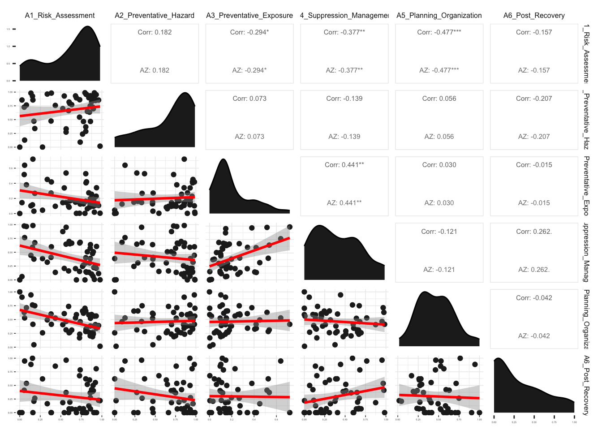
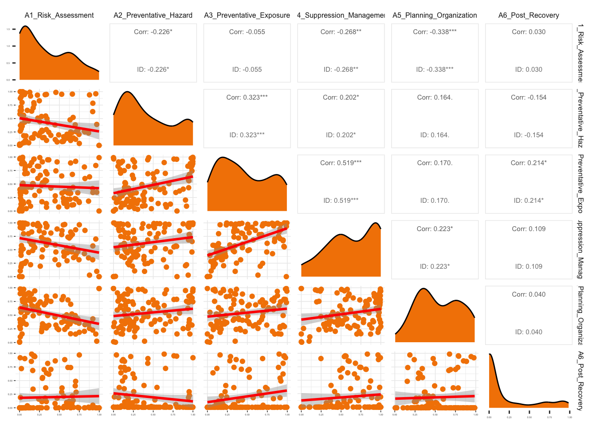

Wildfire Protection Strategies in Community Wildfire Protection Plans
2024-11-22
Analyzing Community Wildfire Protection Plans with Natural Language Processing
Abstract
Wildfire protection strategies (WPS) afford mitigation planners a diverse set of tools to reduce risk to households and communities before, during, and after a wildfire event. However, ex-post effectiveness of WPS are poorly understood. Since the 2003 Healthy Forests Restoration Act, Community Wildfire Protection Plans (CWPP) have become a standard planning and mitigation tool to prevent loss from wildfire events in the United States. Although efforts have been made to document CWPPs and analyze some key aspects of these documents, there remains limited insight into which WPS these plans contain and how effective they have been in preventing wildfire loss. There is also no generalizable, national effort to assess this, which leaves communities without evidence-based research to refine and improve existing and novel plans. This paper proposes an innovative approach to improving our understanding of WPS effectiveness by studying CWPPs at a national level over the full history of these plans. First we build upon the national-level CWPP database to achieve greater spatiotemporal coverage. Then we derive WPS variables from CWPPs using recent advances in natural language processing. Next we build a unique dataset to observe WPS effectiveness by combining the CWPP-derived variables with open source data on wildfire hazard, event characteristics, and environmental context. We then design a series of statistical models to test WPS effectiveness under various spatiotemporal and treatment effect specifications. Lastly we analyze how trends in WPS policy and implementation respond to wildfire events and interact with the effectiveness inferred from our statistical models.
1 Introduction
Wildfires have become an increasingly dangerous hazard across the United States in recent years. Annual areal extent (land burned) of wildfires has gone up for nearly every US state in the 21st century (US EPA, 2022). Wildfire frequency (rate of return), intensity (energy released), and severity (life and property losses) have also increased in many states, especially in the west (Burke et al., 2021; Donovan, Crandall, Fill, & Wonkka, 2023; Radeloff et al., 2023; Westerling, Hidalgo, Cayan, & Swetnam, 2006). The ‘fire deficit’ in US forests from misguided wildfire management practices has only recently begun decreasing over the past couple of decades (Marlon et al., 2012). This deficit coupled with climate change, insect blight, and increasing exposure in the Wildland-Urban Interface has led to a wildfire crisis in the west (Radeloff et al., 2018a). Disaster mitigation and management is particularly challenging for wildfires compared to other natural hazards. The complexities of fire ecology produce large uncertainties for occurrence, duration, and spread for any event. Wildfire protection strategies (WPS) afford mitigation planners a diverse set of tools to reduce risk to households and communities during a wildfire event. However, ex-post effectiveness of WPS are poorly understood. Greater household, community, and ecosystem specific knowledge of WPS effectiveness would inform wildfire disaster mitigation planning to reduce future loss of life and property.
Community Wildfire Protection Plans (CWPP) have become a standard planning and mitigation tool to provide local support for preventing loss from wildfire events. Jurisdictions draft CWPPs across the USA at varying administrative, spatial, and temporal scales. The creation, improvement, and maintenance of these plans is highly heterogenous among communities. Although efforts have been made to document CWPPs and analyze some key aspects of these documents, there remains limited insight into which WPS these plans contain and how effective they have been in preventing wildfire loss. There is also no generalizable, national effort to assess this, which leaves communities without evidence-based research to refine and improve existing and novel plans.
This project proposes a novel approach to improving our understanding of WPS effectiveness. First we construct WPS variables from Community Wildfire Protection Plans (CWPP) using recent advances in natural language processing. Next we build a unique dataset to explore WPS in CWPPs and observe their effectiveness by combining the NLP-derived variables with open source data on wildfire hazard, event characteristics, and socio-environmental context. Then we analyze the temporal, spatial, contextual, and stylistic patterns and detrminants of CWPPS. A series of statistical models will test WPS effectiveness under various spatiotemporal and treatment effect specifications. In the last phase we analyze how trends in WPS policy and implementation respond to wildfire events and interact with the effectiveness inferred from our statistical models. The primary research questions will be:
- Which wildfire protection strategies can we extract from community wildfire protection plans using natural language processing?
- Do we observe actionable differences in the effectiveness of wildfire protection strategies?
- How does context moderate wildfire protection strategy effectiveness?
- Do communities tend to implement the most effective wildfire protection strategies for their context?
- How does a wildfire event influence community implementation of wildfire protection strategies?
Project outcomes include a unique open source dataset for studies on wildfire disaster mitigation, a natural language processing model trained on wildfire mitigation texts, the first ever country-wide approximation of WPS effectiveness to guide policy and further research, and a critical understanding of the relationship among wildfire events, disaster mitigation, and post-event response. This research will serve a critical role in advancing the context-specific informed adoption of effective WPS under rapidly changing wildfire risk scenarios.
2 Wildfire Risk Mitigation
Wildfires pose significant danger to communities in the United States, particularly in high population growth areas of the Wildland-Urban Interface (WUI) (Hammer, Radeloff, Fried, & Stewart, 2007; Radeloff et al., 2018b). Disaster mitigation planning for wildfires has evolved over time to better incorporate scientific knowledge, policy lessons, and community engagement. An integrated, adaptive, and community-centric approach has become the dominant paradigm over the 21st century. Long a part of the American landscape, wildfires have shaped ecosystems and influenced human settlement. Indigenous peoples across the continent understood and adapted to wildfire regimes, using controlled burns to manage landscapes and resources. European settler colonial development and later WUI expansion made wildfires an increasing threat to life, property, and infrastructure.
The 19th century saw the first organized attempts at wildfire management. Federal agencies such as the U.S. Forest Service were established to protect public lands from wildfires. During this period, the emphasis was largely on fire suppression, with the belief that all fires should be extinguished as quickly as possible. However, this approach neglected the ecological benefits of natural fire cycles and often resulted in the accumulation of hazardous fuels. In the mid-20th century, the emergence of fire ecology as a scientific discipline began to reshape wildfire mitigation planning. Pioneering research emphasized the importance of prescribed burns and ecosystem management. This shift in perspective laid the foundation for integrating ecological principles into wildfire management strategies.
While not the largest, the 1991 Tunnel Fire in the Oakland-Berkeley hills was a foreshadowing of an increasingly common fire pattern over the next several decades: a minor fire escalates, spurred on by arid conditions and wind, to ultimately become one of the deadliest and most destructive fires in state history. It claimed 25 lives, injured 150 others, and destroyed over 3200 housing units (FEMA, 1991). Empirical observations have seen this pattern grow while simulations consistently show continued growth as a result of climate and land use change alongside population growth and redistribution (Bryant & Westerling, 2014; Kloster, Mahowald, Randerson, & Lawrence, 2012; Westerling & Bryant, 2008).
The 2000 National Fire Plan and the 2003 Healthy Forests Restoration Act (HFRA) marked important milestones in wildfire mitigation planning. These policies aimed to reduce hazardous fuels, restore fire-adapted ecosystems, and enhance community resilience. They also emphasized collaborative partnerships among federal, state, and local stakeholders. In the 21st century, there has been a growing recognition of the importance of community engagement and adaptive management. Programs like Firewise and Fire Adapted Communities have empowered communities to take proactive measures in wildfire planning and preparedness. Furthermore, climate change has necessitated a more dynamic approach to wildfire management.
3 Natural Hazard Mitigation Plans
Natural Hazard Mitigation Plans (NHMP) have been used in the US to reduce hazard risk since the early 1900s. Much of the initial attention went to flood hazards but quickly expanded to wildfires, hurricanes, and many others. These plans have been successful in helping communities, municipalities, states, and the federal government to coordinate among themselves for disaster preparation, event management, and post-disaster recovery. Because hazard types and characteristics vary dramatically across the diverse geography of the country, many practitioners have pushed for communities to write hazard-specific planning documents.
4 Community Wildfire Protection Plans
By the early 2000s, Community Wildfire Protection Plans (CWPPs) emerged as essential tools in modern wildfire mitigation and risk reduction efforts across the United States. These plans represent a crucial bridge between local communities, government agencies, and wildfire management strategies. CWPPs provide a framework for communities to assess their wildfire risk, prioritize mitigation efforts, and engage in collaborative initiatives that enhance their resilience to wildfire events. Barriers to understanding CWPP effectiveness stem from the vastly different plan content and context, which WPS each plan contains, and whether including and implementing specific WPS reduces wildfire risk to communities. 4.1 shows the timing of locations of communities drafting CWPPs.
The geographies of CWPP jurisdictions range from town to wildfire districts to counties. They include a set of mandatory and recommended Wildfire Protection Strategies (WPS) outlined in the HFRA (McInnis, 2003). The HFRA directed the creation of CWPPs as a standardized way to mitigate wildfire event loss, although CWPP creation began even before this. The language of the HFRA loosely outlined the purpose, content, and development of CWPPs as well as the governance structures that communities might engage for successful plan creation and implementation. Since then communities have worked collaboratively with different levels of government to design community-based plans aimed at reducing risk from wildfire events along every step of the disaster management cycle (Alexander, 2002).
Driven by the need for a more community-centric approach to wildfire mitigation, the primary objective of CWPPs is to bring together a diverse array of stakeholders, including residents, local governments, fire departments, state agencies, and non-profit organizations, to jointly address wildfire risk within a defined geographic area. A cornerstone of CWPPs is the assessment of wildfire risk and vulnerability specific to a given community or region. Through collaboration with wildfire experts and agencies, communities conduct comprehensive assessments that consider factors such as historical wildfire patterns, weather conditions, fuel loads, and the proximity of structures to wildland areas. These assessments help communities identify areas at the greatest risk and prioritize mitigation efforts accordingly.
CWPPs do not offer generic solutions; instead, they empower communities to select and prioritize mitigation strategies tailored to their unique circumstances. Mitigation strategies can include prescribed burns, fuel reduction projects, home hardening, evacuation planning, and community education programs. CWPPs facilitate a data-driven approach, enabling communities to allocate resources efficiently and effectively. One of the strengths of CWPPs is their emphasis on collaborative decision-making. Communities engage in a structured dialogue with experts and agencies to identify the most appropriate mitigation measures. This collaborative approach fosters a sense of ownership and investment among community members, leading to a higher likelihood of successful implementation.
After plan development, communities work in partnership with various stakeholders to execute identified mitigation projects and initiatives. Regular monitoring and evaluation ensure that strategies remain relevant and effective in the face of changing wildfire dynamics. CWPPs have demonstrated their effectiveness in enabling communities to implement WPS. However, ongoing challenges include securing funding for mitigation projects, addressing the expanding wildland-urban interface, and adapting to a changing climate. Future directions for CWPPs involve leveraging technology, data analytics, and community education to further enhance their impact.
Figure 4.1: CWPP Development over Time
5 Wildfire Protection Strategies
Wildfire Protection Strategies (WPS) are essential components of Community Wildfire Protection Plans (CWPPs), which aim to mitigate the growing threats of wildfires. A paradigm shift in wildfire mitigation planning, CWPPs emphasize the importance of local engagement and collaborative planning. These plans empower communities to take proactive measures to protect their homes, natural resources, and quality of life. The strategies encompassed in CWPPs typically integrate multiple dimensions of risk mitigation planning, addressing wildfire prediction, prevention, preparedness, response, and recovery to create a comprehensive management framework. CWPP development typically begins with describing the current wildfire risk conditions to inform the identification of risk mitigation problems. Once the problems are recognized, solutions are found to enhance protection against wildfires. Solutions may be provided as recommendations, laws, regulations, codes, or institutions. An iterative process, CWPP development helps communities implement relevant WPS. This section explores the key strategies found in CWPPs and highlights their role in reducing wildfire risks by integrating scientific research, community engagement, and policy innovations.
Prediction
Predicting future wildfire patterns, behaviors, and impacts uses the observational record, modeling, and assessments. This includes studying historical fire perimeters, ignition sources, fire behavior, burn severity, and emergency responses. Insights from historical data guide current and future wildfire management strategies. Wildfire hazard analysis provides generalized risk metrics by modeling and mapping factors such as terrain, weather, and vegetation. These efforts help delineate hazard zones, calculate fire danger ratings, and predict smoke impacts on communities. Similarly, exposure assessment identifies vulnerable areas, populations, and infrastructure at risk from wildfires. Fuel load assessments evaluate flammable vegetation and materials. Evaluating the resilience and functioning of natural ecosystems through factors such as biodiversity, soil health, water quality, and wildlife habitats helps ensure long-term sustainability. Modeling the role of climate change further readies communities for shifting wildfire risk.
Prevention
Preventing wildfire disaster depends on fuel management, land use planning prevention Fuel management is central to reducing the spread and intensity of wildfires. Whether targeting community and wildland areas or individual properties, these efforts reduce flammable vegetation and create defensible spaces. Prescribed burns, carried out under specific weather and geographic conditions, are frequently used to reduce vegetation, limit fuel availability, and restore ecosystems. Research has demonstrated their effectiveness in creating firebreaks and lessening fire intensity (Agee, 1993; Bradstock et al., 2012). Similarly, mechanical fuel reduction techniques such as thinning, clearing, and mowing are widely employed to decrease fuel loads in and around communities, slowing wildfire progression and safeguarding infrastructure (Collins, Penman, Price, & Bradstock, 2015; Stephens et al., 2012). Cultural burns have been employed in collaboration with Indigenous stakeholders to achieve both ecological and safety goals. Land-use planning is also emphasized, with zoning practices that create defensible space, integrate fire-resistant vegetation, and maintain greenbelts to buffer urban areas from wildfire risks. Building codes and home hardening complement these strategies, as CWPPs often recommend fire-resistant materials and ember-resistant structural designs to reduce flammability. Ignition control involves restrictions on high-risk activities, such as campfires and fireworks, to prevent accidental ignitions in vulnerable areas.
Preparedness
Preparing for a wildfire event requires robust infrastructure, emergency planning, and engaged communities. Infrastructure readiness and resilience ensures that critical systems, such as utilities, transportation networks, and healthcare facilities, can withstand wildfires. Measures include reinforcing power grids, maintaining evacuation routes, and protecting essential services during wildfire events. Emergency planning focuses on evacuation routes, communication protocols, and coordinated disaster response efforts. Hazardous materials control minimizes risks from chemicals, fuels, and industrial sites. Measures include proper storage, decontamination procedures, and compliance with safety regulations. The importance of community participation and awareness in wildfire protection is seen through public education campaigns, workshops, and outreach efforts to inform and collaborate with residents about CWPPs. Research shows that communities are more likely to adopt proactive strategies, individual responsibility and collective action, when equipped with knowledge and preparedness strategies (McCaffrey, Velez, & Briefel, 2013). Outreach programs, school initiatives, and community-driven efforts also foster a culture of shared responsibility. Assessing social vulnerability, particularly for specific areas, addresses the unique challenges faced by marginalized populations, ensuring equitable access to resources and support.
Response
Responding successfully to wildfires depends on the availability of trained personnel, robust firefighting equipment, and mutual aid agreements. CWPPs prioritize the allocation of resources, ensuring effective collaboration among local, state, and federal agencies to manage wildfires and protect communities (Mell, Manzello, Maranghides, Butry, & Rehm, 2010). Coordination among organizations, agencies, and private entities further strengthens wildfire management efforts. By fostering partnerships and mutual aid agreements, CWPPs enable communities to minimize damage and enhance safety. Firefighting capabilities encompass resource allocation, personnel training, and equipment readiness. Investments in aerial firefighting, prepositioned resources, and incident management teams enhance the ability to combat wildfires effectively. Integrated advanced technologies to improve early detection and preparedness, such as remote sensing, drones, and other innovative tools, provide real-time data that enable rapid responses to wildfire incidents (Chuvieco et al., 2020). Evacuation planning is another critical component, with CWPPs outlining guidelines for developing safe evacuation routes, prioritizing the needs of vulnerable populations, and coordinating traffic management during emergencies. Monitoring and reporting supports these efforts by providing real-time data on wildfire conditions for timely responses.
Recovery
Recvering post-fire is another key focus of CWPPs, which outline measures to rehabilitate ecosystems, stabilize soils, and support affected communities. Actions such as erosion control, reforestation, habitat restoration, and water quality restoration are integral to mitigating long-term environmental damage (Robichaud et al., 2013). Community resilience efforts, including strengthening social networks, providing financial and psychological support, and offering rebuilding guidelines, play a crucial role in helping individuals and neighborhoods recover from the aftermath of wildfires (Paton & Johnston, 2017). These recovery strategies not only address immediate challenges but also lay the groundwork for future preparedness and adaptation. Financial assistance and infrastructure repair are vital components of recovery plans. Developing plans that are well-documented and actionable provides a roadmap for long-term resilience. Post-Fire Rehabilitation: CWPPs advocate for actions such as erosion control, reforestation, and water quality restoration to reduce long-term environmental damage.
CWPPs serve as a dynamic framework and tool for managing the multifaceted challenges posed by wildfires. By incorporating scientific research, stakeholder input, and local knowledge, these plans provide a balanced approach to risk reduction and resilience building. However, challenges remain in effectively implementing CWPPs, particularly as climate change continues to intensify wildfire risks. Resource allocation, equitable land-use planning, and sustained public engagement are critical to ensuring the success of these plans. As wildfires increasingly threaten human and ecological systems, CWPPs offer a pathway to adaptive and proactive wildfire management. Through collaboration across agencies and communities, these plans bridge the gap between risk assessment and actionable mitigation, ensuring that wildfire protection strategies evolve alongside the changing landscape of risks and priorities. This integrated approach positions CWPPs as a vital resource for protecting lives, property, and ecosystems from the devastating impacts of wildfires.
6 DPSIR
The DAPSI(W)R(M) framework, adapted to understand and address environmental challenges comprehensively. This framework, initially conceptualized by Elliott & O’Higgins (2020), offers a causal structure for analyzing environmental issues through interconnected stages. Below is an overview of each component.
Drivers represent the basic human and environmental needs that motivate actions impacting wildfire risk. Examples include the need for housing in the wildland-urban interface (WUI), ensuring immediate safety through wildfire suppression, and societal development fueled by the consumption of fossil fuels. These drivers underpin the actions that directly or indirectly influence wildfire behavior and its associated risks.
Activities describe the ways in which human needs are met. These include constructing buildings in fire-prone areas, suppressing wildfires to ensure short-term safety, and engaging in industrial activities that alter natural ecosystems. While these activities fulfill essential requirements, they also create the conditions that can elevate wildfire risks.
Pressures are the consequences of human activities that lead to state changes in the environment. Examples of these pressures include an increase in wildfire ignitions within the WUI, a growing proportion of surface and ground fuels, and the widespread effects of anthropogenic climate change. These pressures highlight the cascading impact of human actions on wildfire vulnerability.
State or state change refers to environmental conditions or anthropogenic transformations related to wildfire risk. These changes might include increased probabilities of wildfire occurrence, greater likelihoods of crown fires, or ecological shifts such as mountain pine beetle outbreaks exacerbated by lower winter temperatures. These state changes are key indicators of the evolving wildfire landscape.
Impacts (Welfare) emerge from state changes, affecting both social and ecological systems. Wildfire risks can overwhelm natural and human systems, resulting in higher wildfire intensity and severity, increased incidence of standing dead timber, and disruptions to community welfare. These impacts demonstrate the complex interactions between ecological conditions and human well-being.
Response (Management) focuses on mitigating wildfire risks while addressing human and environmental needs. Responses encompass evidence-based strategies, regulations, and institutional actions aimed at reducing risks and fostering resilience. These responses can be further categorized into past actions, which reflect historical or ongoing measures, and future plans, which represent proactive strategies for managing anticipated wildfire risks.
The DAPSI(W)R(M) framework can be expanded in this context to include Past and Future responses. These additions emphasize the importance of learning from previous efforts while planning for future interventions.
7 Wildfire Impacts
Wildfires impact human systems through property damage and destruction; injury, death, and displacement; and air quality degradation associated with negative health outcomes (Tedim et al., 2018). Direct losses, such as property damage, are well measured by the public and private (e.g., insurance) sector whereas there is relatively less data on indirect losses, such as health outcomes, since they require more complicated observational protocols and causal attribution is less straightforward. However, many studies on indirect losses and impacts related to natural systems, such as disruption of ecosystem services, have attempted to address this knowledge gap. For indirect losses see (Adetona et al., 2016; Reid et al., 2016; Williamson, Bowman, Price, Henderson, & Johnston, 2016) and for impacts on natural systems see (Bormann, Homann, Darbyshire, & Morrissette, 2008; Cunillera-Montcusí et al., 2019; Love & Cane, 2016). Since loss assessments do not capture the full breadth and depth of wildfire impacts on human and natural systems, the total impact of wildfire disasters goes unseen. Loss assessments occur following nearly every wildfire event and typically comprise area burnt, structures damaged and destroyed, and injuries and deaths. These assessments represent an approximation of the impact wildfires have not only on individuals but also across multiple levels of the economy.
Impacts from wildfires vary by space and place as well as by individual and property characteristics. Research has shown differential susceptibility by gender, age, race, health status, and area socioeconomic status (Bell, Ebisu, & Belanger, 2007; J. C. Liu, Pereira, Uhl, Bravo, & Bell, 2015; Reid et al., 2016). While direct impacts from wildfires in the Wildland-Urban Interface tend to affect more affluent homeowners, indirect health impacts from air quality deterioration and shifting demographic composition of climate risky areas may reveal a wholly different spatial distribution of wildfire risk impacts.
Estimating exposure to wildfire smoke tends to be more complicated than estimation for other ambient air pollution (Youssouf et al., 2014). J. C. Liu et al. (2015) conducted a systematic review of health impacts from wildfire smoke in which they found consistent associations with respiratory disease and tentative evidence for cardiovascular disease and mortality. We observe these associations for non-wildfire smoke related ambient air pollution as well. Many studies find respiratory and cardiovascular health impacts as well as all-cause mortality (Kampa & Castanas, 2008; Pope III & Dockery, 2006). An older review found a thin body of research from two main study categories: economic costs of wildfire-related health impacts and health risk from wildfire smoke–the authors identified a need for better understanding of wildfire-related health impacts (Kochi, Donovan, Champ, & Loomis, 2010). Specific studies and broad literature reviews that address health impacts of wildfire smoke show increased rates of asthma and respiratory disease (Bowman & Johnston, 2005; Reid et al., 2016), cardiovascular complications, ophthalmic symptoms, genetic mutations and all-cause mortality (Adetona et al., 2016; Hänninen et al., 2009; Naeher et al., 2007; Viswanathan, Eria, Diunugala, Johnson, & McClean, 2006; Williamson et al., 2016; Youssouf et al., 2014). Studies have shown an increase in preterm births from wildfire smoke-related pm10 and CO exposure (Ritz, Yu, Chapa, & Fruin, 2000), lower birthweight varying by trimester of exposure to wildfire smoke (Breton, Park, & Wu, 2011; Holstius, Reid, Jesdale, & Morello-Frosch, 2012).
8 Climate Change and Wildfires
Climate change projections indicate increased wildfire hazard over the next century (Pechony & Shindell, 2010). Wildfire regimes are projected to change in many ways, which will affect forest ecosystems and human settlements alike (Moritz et al., 2012). The general trend, using historic data and future projections, suggests increased area burned and a resulting decrease in air quality. Variability in results from these studies depends on the geographic and temporal scope, the climate models utilized, and environmental factors considered, e.g., wind, vegetation, etc. Even so, there exists consistency between studies, such as increases in area burned by 54% in the western US (Spracklen et al., 2009) or by 50% in northern California (Fried, Torn, & Mills, 2004). Despite California having a somewhat frequent wildfire regime–occurrence was historically every twenty years in Redwood forests and every half century in the chaparral (Steel, Safford, & Viers, 2015)–the California Department of Forestry and Fire Protection (CALFIRE, 2022) has recorded the three largest fires, the August, Dixie, and Mendocino, as well as the three most destructive and deadliest, the Camp, Tubbs, and Tunnel Fires, within the past five years (Williams et al., 2019). However, there is variation in the direction of change across areas prone to wildfire risk, primarily due to ecosystem and climatic differences. Higher temperatures and lower precipitation in a place such as southern California may result in an eventual decrease in wildfire risk while places with increasing precipitation yet a lower increase in temperature may exhibit the opposite (Westerling & Bryant, 2008).
Wildfire risk has increased independent of changes in land-use and management over the past century. The greatest increases in large wildfire frequency, duration, and season since the mid-1980s has occurred in the mid-elevation Northern US Rockies, a region relatively unaffected by shifting land-use. The culprit appears to be higher spring and summer temperatures and earlier spring snowmelt (Westerling et al., 2006). Acreage burned per year by wildfires has gone up for nearly every state in the 21st century (Hoover & Hanson, 2020). The intensity and severity of wildfire hazard is expected to continue to increase, especially in summer and fall, in the West, Northern Midwest, and Southeast, and prospects point to greater burned area and longer wildfire seasons (Y. Liu, L. Goodrick, & A. Stanturf, 2013). Wildfire research has typically focused on estimating changes to global pyrogeography, specifically the frequency, seasonality, areal extent, and intensity of fire regimes (Krawchuk, Moritz, Parisien, Van Dorn, & Hayhoe, 2009). These characteristics vary due to differences in the spatiotemporality of ignitions, environmental conditions, fuels, and climate change trends (Krawchuk & Moritz, 2011; Moritz et al., 2012). This large-scale modeling effort has seen an increasing interest in incorporating and analyzing anthropogenic influences and consequences over the past decade (Mann et al., 2016).
Despite significant progress, challenges remain. Increasingly severe wildfires, exacerbated by climate change, pose unprecedented threats. Balancing the need for fire suppression with the ecological benefits of fire remains a challenge. Additionally, the WUI continues to expand, increasing community exposure. The future of wildfire mitigation planning in the United States requires innovative solutions. This includes harnessing technology for early detection and prediction, enhancing public education and outreach, and fostering collaboration across agencies and communities. Embracing indigenous knowledge and practices in wildfire management is also gaining recognition.
9 WPS CLASSIFICATION
The research goals of this section are to 1) expand and improve the Community Wildfire Protection Plan (CWPP) Database by designing an automated CWPP document gathering and curation process; 2) design a natural language processing tool to derive Wildfire Protection Strategies (WPS) from CWPPs and similar documents, such as Natural Hazard Mitigation Plans and Climate Adaptation Plans (CWPP+); and 3) construct a spatiotemporal panel dataset representing WPS taken from the corpus of CWPP+ documents and fire risk characteristic
Our NLP approach to classifying WPS within CWPPs uses several different methods to iteratively build towards a fine-tuned deep learning model. We begin by using the CWPP Database (Palsa, Bauer, Evers, Hamilton, & Nielsen-Pincus, 2022), a resource of previously collected plans with geographic boundaries and other useful attributes for later statistical analysis. To expand the number of CWPPs available for this study and build upon the existing database, we have designed an automated web scraping process for gathering CWPP+ documents from administrative websites, as well as their spatial boundaries.
The first step in NLP is to convert the CWPP documents to machine readable text data suitable for labeling. CWPPs typically come as pdf files, which we convert to vectorized character strings. Images and formatting, such as tables, are removed. We break up each CWPP into paragraphs since training an NLP model typically requires a larger sample size of documents.
We specified 25 distinct WPS in total from myriad sources including academic literature, the National Fire Protection Association (NFPA) Codes and Standards (NFPA, 2022a), and thematic analysis of CWPPs. 9.1 provides an overview of WPS (for further detail see Appendix - Wildfire Protection Strategies Descriptions for Natural Language Processing). The process for classifying whether a CWPP contains a given WPS is in Figure X - Natural Language Processing Workflow.
| WPS | Prompt |
|---|---|
| V1_Historical_Wildfire | Data collection, analysis, or mapping on previous wildfire events or fire regimes |
| V2_Wildfire_Hazard | Wildfire hazard or risk assessments to produce ratings, metrics, indices, or models |
| V3_Exposure | Names, quantities, or qualities of people, buildings, or places exposed to wildfire hazard |
| V4_Fuel_Load_Assessment | Fuel load assessments in forests on fuel type, stand density, fuel moisture, etc. |
| V5_Ecosystem_Health | Forest health driven by factors such as drought, soil, invasive species, water quality |
| V6_Climate_Change | Explicit mention of anthropogenic climate change or long-term climate conditions |
| V7_Suppression | Total wildfire suppression or elimination from the ecosystem |
| V8_Fuel_Management_Structures_Property | Defensible space or flammable material reduction around properties |
| V9_Fuel_Management_Community_Wildland | Reducing fuel in the forest or wildland through prescribed burns, thinning, etc. |
| V10_Home_Hardening_Building_Codes | Building rules or codes to reduce structural ignitability |
| V11_Firefighting_Structures_Property | Ensuring safe firefighter access to properties and water sources |
| V12_Firefighting_Community_Wildland | Support for fighting active wildfires in the wildland through personnel, trucks, etc. |
| V13_Infrastructure_Readiness_Resilience | Maintenance and readiness of infrastructure such as roads, utilities, water supply |
| V14_Emergency_Planning | Emergency planning for safety such as evacuation routes, shelters, signage |
| V15_Monitoring_Reporting | Monitoring or reporting wildfire incidents through early warning systems |
| V16_Hazardous_Materials | Hazardous material control |
| V17_Ignition_Control | Preventing wildfire ignitions from negligence, electrical lines, machinery |
| V18_Community_Engagement | Engaging communities to increase wildfire safety awareness and preparedness |
| V19_Social_Vulnerability | Social vulnerability based on income, age, disability, race/ethnicity, etc. |
| V20_Land_Use_Planning | Land use planning like permitting, zoning, sprawl control, ordinances |
| V21_Organizational_Collaboration | Coordination or cost-sharing among organizations, businesses, or agencies |
| V22_Economic_Cultural_Loss | Wildfire-related cultural or economic losses |
| V23_Insurance | Insurance against wildfire loss |
| V24_Post_Fire_Recovery | Post-wildfire recovery and rehabilitation for impacted towns |
| V25_Plan_Development | Development and administration of Community Wildfire Protection Plans |
| V26_Bad_Quality_Null | No relevant label |
| V27_Bad_Quality_Gibberish | No words or it’s gibberish |
10 TEMPORAL LEARNING
The first set of experiments we conduct looks at change over time in WPS inclusion and how jurisdictions have learned how to draft plans. We first plot time trends across WPS absolute frequency, relative frequency, and index.
10.1 WPS over Time Null Model Plot
Then we look at ‘plan year’ coefficients with a linear model for index scores over time using the average index value across all plans per year. We sort the results in descending order based on the coefficient estimate.
Figure 10.1: WPS in CWPPs over time
Figure 10.2: WPS in CWPPs over time
Figure 10.3: WPS in CWPPs over time
10.2 WPS over Time Null Model Table
| WPS | Estimate | Standard Error | T Value | P Value |
|---|---|---|---|---|
| V3_Exposure | 0.0174 | 0.0032 | 5.5173 | 0.0000 |
| V18_Community_Engagement | 0.0160 | 0.0031 | 5.1456 | 0.0000 |
| V17_Ignition_Control | 0.0137 | 0.0029 | 4.7550 | 0.0001 |
| V24_Post_Fire_Recovery | 0.0136 | 0.0036 | 3.8101 | 0.0010 |
| V22_Economic_Cultural_Loss | 0.0134 | 0.0035 | 3.8161 | 0.0009 |
| V2_Wildfire_Hazard | 0.0133 | 0.0031 | 4.2539 | 0.0003 |
| V6_Climate_Change | 0.0129 | 0.0034 | 3.7884 | 0.0010 |
| V19_Social_Vulnerability | 0.0128 | 0.0035 | 3.6855 | 0.0013 |
| V20_Land_Use_Planning | 0.0115 | 0.0038 | 2.9823 | 0.0069 |
| V25_Plan_Development | 0.0111 | 0.0037 | 2.9691 | 0.0071 |
| V23_Insurance | 0.0103 | 0.0041 | 2.5131 | 0.0198 |
| V21_Organizational_Collaboration | 0.0088 | 0.0036 | 2.4270 | 0.0239 |
| V13_Infrastructure_Readiness_Resilience | 0.0084 | 0.0036 | 2.3569 | 0.0277 |
| V1_Historical_Wildfire | 0.0078 | 0.0035 | 2.2436 | 0.0353 |
| V14_Emergency_Planning | 0.0072 | 0.0038 | 1.9097 | 0.0693 |
| V9_Fuel_Management_Community_Wildland | 0.0071 | 0.0035 | 2.0397 | 0.0536 |
| V10_Home_Hardening_Building_Codes | 0.0068 | 0.0037 | 1.8416 | 0.0791 |
| V8_Fuel_Management_Structures_Property | 0.0063 | 0.0039 | 1.6279 | 0.1178 |
| V12_Firefighting_Community_Wildland | 0.0037 | 0.0034 | 1.0787 | 0.2924 |
| V7_Suppression | 0.0030 | 0.0029 | 1.0501 | 0.3051 |
| V5_Ecosystem_Health | 0.0026 | 0.0038 | 0.6791 | 0.5042 |
| V4_Fuel_Load_Assessment | 0.0016 | 0.0043 | 0.3743 | 0.7118 |
| V15_Monitoring_Reporting | 0.0012 | 0.0039 | 0.3077 | 0.7612 |
| V11_Firefighting_Structures_Property | 0.0010 | 0.0039 | 0.2522 | 0.8032 |
| V16_Hazardous_Materials | 0.0006 | 0.0022 | 0.2853 | 0.7781 |
10.3 WPS over Time Logit Model Plot
The next test specifies a logistic model of plan year when looking only at jurisdictions that have multiple plans over time. The estimate is the probability that a later plan will have a higher index value. We sort the results in descending order based on the log-odds coefficient estimate.

10.4 WPS over Time Logit Model Table
| Variable | Estimate | Std. Error | Z-Statistic | P-Value |
|---|---|---|---|---|
| V19_Social_Vulnerability | 0.120 | 0.028 | 4.278 | 0.000 |
| V17_Ignition_Control | 0.105 | 0.024 | 4.295 | 0.000 |
| V5_Ecosystem_Health | 0.079 | 0.024 | 3.339 | 0.001 |
| V13_Infrastructure_Readiness_Resilience | 0.077 | 0.024 | 3.227 | 0.001 |
| V22_Economic_Cultural_Loss | 0.073 | 0.024 | 3.001 | 0.003 |
| V2_Wildfire_Hazard | 0.072 | 0.024 | 3.038 | 0.002 |
| V3_Exposure | 0.066 | 0.024 | 2.804 | 0.005 |
| V1_Historical_Wildfire | 0.060 | 0.023 | 2.564 | 0.010 |
| V6_Climate_Change | 0.050 | 0.024 | 2.042 | 0.041 |
| V24_Post_Fire_Recovery | 0.049 | 0.025 | 1.952 | 0.051 |
| V23_Insurance | 0.037 | 0.026 | 1.415 | 0.157 |
| V8_Fuel_Management_Structures_Property | 0.033 | 0.023 | 1.429 | 0.153 |
| V14_Emergency_Planning | 0.031 | 0.023 | 1.360 | 0.174 |
| V10_Home_Hardening_Building_Codes | 0.027 | 0.024 | 1.123 | 0.261 |
| V16_Hazardous_Materials | 0.008 | 0.027 | 0.316 | 0.752 |
| V21_Organizational_Collaboration | 0.006 | 0.023 | 0.260 | 0.795 |
| V25_Plan_Development | 0.001 | 0.023 | 0.032 | 0.974 |
| V9_Fuel_Management_Community_Wildland | -0.001 | 0.023 | -0.054 | 0.957 |
| V20_Land_Use_Planning | -0.008 | 0.023 | -0.333 | 0.739 |
| V18_Community_Engagement | -0.011 | 0.023 | -0.468 | 0.640 |
| V15_Monitoring_Reporting | -0.014 | 0.023 | -0.618 | 0.536 |
| V4_Fuel_Load_Assessment | -0.014 | 0.023 | -0.598 | 0.550 |
| V11_Firefighting_Structures_Property | -0.026 | 0.023 | -1.118 | 0.264 |
| V7_Suppression | -0.043 | 0.026 | -1.665 | 0.096 |
| V12_Firefighting_Community_Wildland | -0.060 | 0.023 | -2.586 | 0.010 |
10.5 Contextual Variables Table
Last we take the estimates from the two previous statistical models along with results from four additional models (Linear, Spatial Lag, Fixed Effects, Random Forest) that use the following contextual factors as predictors:
| Variable Name | Description |
|---|---|
| state_id | state of the plan |
| plan_year | year plan drafted |
| structures_damaged | number of structures damaged |
| management_cost | total cost of fire management efforts |
| event_dur | duration of the fire event in days |
| urbanicity | urbanicity index |
| wui_index | Wildland-Urban Interface index |
| bodily_harm | bodily harm = fatalities + injuries |
| fire_year_min | earliest fire year |
| post_fire | whether the plan was drafted after any fire |
| grw_px | fire radiative power |
| fire_size | fire size in acres |
| fire_event | number of fire events |
| zestimate | Zestimate home value estimation |
| str_prop_after_2000 | structures built after 2000 |
| fuel_treatment | fuel treatment in acres |
| republican | proportion of republican voters |
| SVI | Social Vulnerability Index (SVI) |
| FBFM | Fire Behavior Fuel Model 13 group classification |
| RPS | Risk to Potential Structures = fire probability X intensity |
This final test finds the relative importance of plan year coefficients on WPS across all the models as well as the average across models. We sort the results in descending order based on the average relative importance.
10.6 WPS over Time Multimodel Table
| WPS | Null | Logit | LM | SLM | FE | RF | ALL |
|---|---|---|---|---|---|---|---|
| V19_Social_Vulnerability | 0.060 | 0.112 | 0.023 | 0.028 | 0.110 | 0.062 | 0.064 |
| V9_Fuel_Management_Community_Wildland | 0.033 | 0.001 | 0.017 | 0.017 | 0.190 | 0.076 | 0.058 |
| V3_Exposure | 0.082 | 0.062 | 0.005 | 0.004 | 0.064 | 0.122 | 0.055 |
| V24_Post_Fire_Recovery | 0.064 | 0.046 | 0.032 | 0.029 | 0.022 | 0.127 | 0.053 |
| V6_Climate_Change | 0.061 | 0.047 | 0.027 | 0.026 | 0.010 | 0.131 | 0.050 |
| V17_Ignition_Control | 0.065 | 0.098 | 0.006 | 0.008 | 0.084 | 0.047 | 0.049 |
| V13_Infrastructure_Readiness_Resilience | 0.040 | 0.072 | 0.004 | 0.003 | 0.095 | 0.065 | 0.046 |
| V22_Economic_Cultural_Loss | 0.063 | 0.068 | 0.002 | 0.003 | 0.122 | 0.021 | 0.045 |
| V23_Insurance | 0.049 | 0.035 | 0.007 | 0.008 | 0.134 | 0.038 | 0.045 |
| V8_Fuel_Management_Structures_Property | 0.030 | 0.031 | 0.015 | 0.015 | 0.068 | 0.082 | 0.041 |
| V10_Home_Hardening_Building_Codes | 0.032 | 0.025 | 0.010 | 0.010 | 0.052 | 0.095 | 0.038 |
| V5_Ecosystem_Health | 0.012 | 0.074 | 0.001 | 0.002 | 0.109 | 0.033 | 0.038 |
| V1_Historical_Wildfire | 0.037 | 0.056 | 0.001 | 0.001 | 0.073 | 0.046 | 0.035 |
| V2_Wildfire_Hazard | 0.063 | 0.067 | 0.010 | 0.010 | 0.040 | 0.033 | 0.035 |
| V20_Land_Use_Planning | 0.054 | 0.007 | 0.001 | 0.001 | 0.109 | 0.022 | 0.033 |
| V18_Community_Engagement | 0.075 | 0.010 | 0.019 | 0.020 | 0.015 | 0.052 | 0.031 |
| V25_Plan_Development | 0.052 | 0.001 | 0.014 | 0.012 | 0.041 | 0.045 | 0.028 |
| V7_Suppression | 0.014 | 0.040 | 0.007 | 0.006 | 0.085 | 0.017 | 0.028 |
| V14_Emergency_Planning | 0.034 | 0.029 | 0.017 | 0.015 | 0.011 | 0.040 | 0.024 |
| V12_Firefighting_Community_Wildland | 0.017 | 0.056 | 0.004 | 0.005 | 0.018 | 0.037 | 0.022 |
| V16_Hazardous_Materials | 0.003 | 0.007 | 0.007 | 0.005 | 0.098 | 0.008 | 0.022 |
| V15_Monitoring_Reporting | 0.006 | 0.013 | 0.007 | 0.005 | 0.059 | 0.019 | 0.019 |
| V11_Firefighting_Structures_Property | 0.005 | 0.024 | 0.001 | 0.002 | 0.029 | 0.038 | 0.017 |
| V21_Organizational_Collaboration | 0.041 | 0.006 | 0.009 | 0.009 | 0.014 | 0.023 | 0.017 |
| V4_Fuel_Load_Assessment | 0.008 | 0.013 | 0.003 | 0.002 | 0.040 | 0.031 | 0.017 |
11 SPATIAL LEARNING
The next set of experiments explores the relationship among CWPPs over space and whether closer jurisdictions tend to have more similar plans. The first test looks at the linear relationship between distance and WPS index values. We sort the results in descending order based on the coefficient estimate.
11.2 WPS by Distance Table
| Variable | Term | Estimate | Std. Error | Z-Statistic | P-Value |
|---|---|---|---|---|---|
| V12_Firefighting_Community_Wildland | distance | 0.005 | 0 | 155.090 | 0.000 |
| V19_Social_Vulnerability | distance | 0.005 | 0 | 119.800 | 0.000 |
| V20_Land_Use_Planning | distance | 0.004 | 0 | 104.504 | 0.000 |
| V21_Organizational_Collaboration | distance | 0.003 | 0 | 103.495 | 0.000 |
| V6_Climate_Change | distance | 0.003 | 0 | 80.299 | 0.000 |
| V7_Suppression | distance | 0.003 | 0 | 66.862 | 0.000 |
| V24_Post_Fire_Recovery | distance | 0.002 | 0 | 44.471 | 0.000 |
| V4_Fuel_Load_Assessment | distance | 0.002 | 0 | 64.041 | 0.000 |
| V8_Fuel_Management_Structures_Property | distance | 0.002 | 0 | 73.945 | 0.000 |
| V10_Home_Hardening_Building_Codes | distance | 0.001 | 0 | 39.581 | 0.000 |
| V11_Firefighting_Structures_Property | distance | 0.001 | 0 | 33.159 | 0.000 |
| V14_Emergency_Planning | distance | 0.001 | 0 | 37.452 | 0.000 |
| V17_Ignition_Control | distance | 0.001 | 0 | 16.833 | 0.000 |
| V1_Historical_Wildfire | distance | 0.001 | 0 | 38.172 | 0.000 |
| V2_Wildfire_Hazard | distance | 0.001 | 0 | 19.519 | 0.000 |
| V5_Ecosystem_Health | distance | 0.001 | 0 | 16.896 | 0.000 |
| V9_Fuel_Management_Community_Wildland | distance | 0.001 | 0 | 40.367 | 0.000 |
| V18_Community_Engagement | distance | 0.000 | 0 | -15.086 | 0.000 |
| V22_Economic_Cultural_Loss | distance | 0.000 | 0 | 12.406 | 0.000 |
| V3_Exposure | distance | 0.000 | 0 | -1.675 | 0.094 |
| V13_Infrastructure_Readiness_Resilience | distance | -0.001 | 0 | -16.161 | 0.000 |
| V15_Monitoring_Reporting | distance | -0.001 | 0 | -24.673 | 0.000 |
| V16_Hazardous_Materials | distance | -0.001 | 0 | -30.348 | 0.000 |
| V23_Insurance | distance | -0.001 | 0 | -38.401 | 0.000 |
| V25_Plan_Development | distance | -0.001 | 0 | -18.201 | 0.000 |
11.3 WPS by Rho Table
The next test reports Rho, a measure of spatial interdependence estimated from the Spatial Lag model–one of the previously described models using contextual predictors. We sort the results in descending order based on the Rho estimate.
- High Positive Rho (near 1): Indicates a strong positive spatial dependence. This suggests that higher values in one location are associated with higher values in nearby locations (and vice versa for lower values).
- Rho Near 0: Indicates weak or no spatial dependence, meaning the variable does not show significant spatial autocorrelation.
- Negative Rho: Indicates a negative spatial dependence, meaning high values in one location are associated with low values in nearby locations, and vice versa. This is less common in spatial data but can happen.
| Variable | rho |
|---|---|
| V1_Historical_Wildfire | -13.7606356 |
| V2_Wildfire_Hazard | 36.2521251 |
| V3_Exposure | -11.1244193 |
| V4_Fuel_Load_Assessment | 6.1309913 |
| V5_Ecosystem_Health | 7.5809381 |
| V6_Climate_Change | 0.9330901 |
| V7_Suppression | 20.8246346 |
| V8_Fuel_Management_Structures_Property | -9.5033011 |
| V9_Fuel_Management_Community_Wildland | -14.0014424 |
| V10_Home_Hardening_Building_Codes | -31.3657881 |
| V11_Firefighting_Structures_Property | 19.3831533 |
| V12_Firefighting_Community_Wildland | -23.4903830 |
| V13_Infrastructure_Readiness_Resilience | 7.1395829 |
| V14_Emergency_Planning | 46.0125574 |
| V15_Monitoring_Reporting | -15.5619555 |
| V16_Hazardous_Materials | -34.8841031 |
| V17_Ignition_Control | -31.9831077 |
| V18_Community_Engagement | -15.3621865 |
| V19_Social_Vulnerability | -29.7254195 |
| V20_Land_Use_Planning | -14.8619157 |
| V21_Organizational_Collaboration | -60.0411685 |
| V22_Economic_Cultural_Loss | -29.5184901 |
| V23_Insurance | 6.8404704 |
| V24_Post_Fire_Recovery | -47.7180212 |
| V25_Plan_Development | -12.4655914 |
11.4 WPS by Moran’s I Table
The last test estimates Moran’s I to measure spatial autocorrelation, or the degree to which similar values occur near each other in geographic space. Moran’s I typically ranges from -1 to +1, although it can sometimes exceed these bounds in certain datasets. We sort the results in descending order based on the Morans’I estimate.
- Moran’s I > 0 (Positive Spatial Autocorrelation): Similar values are clustered together geographically. High values are near other high values, and low values are near other low values.
- Moran’s I ≈ 0 (No Spatial Autocorrelation): There is no apparent pattern in the spatial distribution of values. High and low values are randomly distributed.
- Moran’s I < 0 (Negative Spatial Autocorrelation): Dissimilar values are near each other, indicating a checkerboard-like pattern where high values are near low values and vice versa.
| Variable | Moran’s I | P-Value |
|---|---|---|
| V23_Insurance | 1.3521000 | 0.0000000 |
| V20_Land_Use_Planning | 0.8513968 | 0.0000298 |
| V14_Emergency_Planning | 0.7579207 | 0.0001744 |
| V3_Exposure | 0.7447543 | 0.0002216 |
| V9_Fuel_Management_Community_Wildland | 0.7247702 | 0.0003139 |
| V13_Infrastructure_Readiness_Resilience | 0.7055595 | 0.0004360 |
| V4_Fuel_Load_Assessment | 0.6114714 | 0.0019467 |
| V5_Ecosystem_Health | 0.5696660 | 0.0035791 |
| V11_Firefighting_Structures_Property | 0.5100751 | 0.0079983 |
| V1_Historical_Wildfire | 0.4938483 | 0.0098220 |
| V12_Firefighting_Community_Wildland | 0.4909407 | 0.0102025 |
| V2_Wildfire_Hazard | 0.4870365 | 0.0107063 |
| V7_Suppression | 0.4634727 | 0.0142704 |
| V17_Ignition_Control | 0.3370560 | 0.0553564 |
| V21_Organizational_Collaboration | 0.3056382 | 0.0738809 |
| V6_Climate_Change | 0.2895917 | 0.0850369 |
| V22_Economic_Cultural_Loss | 0.2881009 | 0.0861412 |
| V19_Social_Vulnerability | 0.2048672 | 0.1649948 |
| V15_Monitoring_Reporting | 0.1541493 | 0.2312477 |
| V18_Community_Engagement | 0.1485973 | 0.2392299 |
| V25_Plan_Development | 0.1005749 | 0.3145661 |
| V8_Fuel_Management_Structures_Property | 0.0529836 | 0.3978621 |
| V16_Hazardous_Materials | -0.0238286 | 0.5408696 |
| V24_Post_Fire_Recovery | -0.0501477 | 0.5895464 |
| V10_Home_Hardening_Building_Codes | -0.1045470 | 0.6851612 |
12 CONTEXTUAL LEARNING
Beyond learning over time and from neighbors, jurisdictions likely draft CWPPs based on a set of contextual factors, outlined in 10.3. We test these contextual determinants of WPS in CWPPs with Linear, Spatial Lag, Fixed Effects, and Random Forest models.
12.1 VIF
A first step in statistical model building is to test for multicollinearity among predictors, which we do using Variance Inflation Factors (VIF). A VIF above 5-10 indicates potential multicollinearity, thus indicating that one or more variables should be removed.
| Variable | VIF |
|---|---|
| plan_year | 1.110778 |
| structures_damaged | 1.658130 |
| management_cost | 3.429879 |
| event_dur | 2.293052 |
| urbanicity | 2.594085 |
| wui_index | 2.209613 |
| bodily_harm | 2.422166 |
| fire_year_min | 3.061089 |
| post_fire | 2.761456 |
| grw_px | 2.245471 |
| fire_size | 2.477670 |
| fire_event | 1.361745 |
| zestimate | 1.891944 |
| str_prop_after_2000 | 1.313413 |
| fuel_treatment | 1.309601 |
| republican | 1.651375 |
| SVI | 1.833660 |
| RPS | 1.951407 |
12.2 WPS by Context Multimodel Tables
The relative importance of each contextual predictor is reported per model alongside the Overall Average calculated across models. We sort the results in descending order based on the Overall Average relative importance.
| Variable | LM | SL | FE | RF | AVG |
|---|---|---|---|---|---|
| state_id | 0.208 | 0.198 | 0.554 | 0.226 | 0.296 |
| FBFM | 0.117 | 0.142 | 0.055 | 0.035 | 0.087 |
| post_fire | 0.127 | 0.118 | 0.067 | 0.030 | 0.086 |
| management_cost | 0.099 | 0.097 | 0.035 | 0.071 | 0.075 |
| fire_size | 0.068 | 0.070 | 0.030 | 0.045 | 0.053 |
| event_dur | 0.049 | 0.045 | 0.027 | 0.077 | 0.049 |
| grw_px | 0.054 | 0.052 | 0.024 | 0.043 | 0.043 |
| republican | 0.050 | 0.040 | 0.026 | 0.053 | 0.042 |
| RPS | 0.047 | 0.050 | 0.020 | 0.049 | 0.041 |
| zestimate | 0.040 | 0.038 | 0.018 | 0.054 | 0.038 |
| bodily_harm | 0.037 | 0.033 | 0.013 | 0.039 | 0.031 |
| plan_year | 0.001 | 0.001 | 0.073 | 0.046 | 0.030 |
| fire_year_min | 0.014 | 0.013 | 0.006 | 0.045 | 0.020 |
| structures_damaged | 0.018 | 0.020 | 0.008 | 0.035 | 0.020 |
| fuel_treatment | 0.020 | 0.019 | 0.011 | 0.019 | 0.017 |
| urbanicity | 0.019 | 0.020 | 0.008 | 0.021 | 0.017 |
| str_prop_after_2000 | 0.015 | 0.012 | 0.005 | 0.032 | 0.016 |
| wui_index | 0.010 | 0.016 | 0.004 | 0.032 | 0.016 |
| SVI | 0.007 | 0.012 | 0.012 | 0.022 | 0.013 |
| fire_event | 0.001 | 0.006 | 0.003 | 0.024 | 0.008 |
| Variable | LM | SL | FE | RF | AVG |
|---|---|---|---|---|---|
| state_id | 0.048 | 0.087 | 0.581 | 0.183 | 0.225 |
| wui_index | 0.108 | 0.115 | 0.048 | 0.075 | 0.087 |
| urbanicity | 0.113 | 0.119 | 0.052 | 0.037 | 0.080 |
| event_dur | 0.106 | 0.097 | 0.044 | 0.051 | 0.075 |
| post_fire | 0.084 | 0.119 | 0.044 | 0.013 | 0.065 |
| management_cost | 0.084 | 0.079 | 0.020 | 0.072 | 0.064 |
| republican | 0.079 | 0.074 | 0.036 | 0.037 | 0.056 |
| zestimate | 0.073 | 0.069 | 0.027 | 0.050 | 0.055 |
| RPS | 0.063 | 0.047 | 0.026 | 0.056 | 0.048 |
| bodily_harm | 0.037 | 0.041 | 0.010 | 0.053 | 0.036 |
| fuel_treatment | 0.043 | 0.049 | 0.022 | 0.024 | 0.034 |
| SVI | 0.039 | 0.043 | 0.007 | 0.038 | 0.032 |
| structures_damaged | 0.026 | 0.020 | 0.007 | 0.051 | 0.026 |
| FBFM | 0.027 | 0.005 | 0.012 | 0.049 | 0.023 |
| plan_year | 0.010 | 0.010 | 0.040 | 0.033 | 0.023 |
| str_prop_after_2000 | 0.026 | 0.009 | 0.009 | 0.038 | 0.020 |
| fire_size | 0.009 | 0.001 | 0.002 | 0.052 | 0.016 |
| fire_event | 0.008 | 0.002 | 0.005 | 0.038 | 0.013 |
| grw_px | 0.014 | 0.006 | 0.005 | 0.022 | 0.012 |
| fire_year_min | 0.004 | 0.007 | 0.002 | 0.028 | 0.010 |
| Variable | LM | SL | FE | RF | AVG |
|---|---|---|---|---|---|
| state_id | 0.313 | 0.276 | 0.584 | 0.184 | 0.339 |
| FBFM | 0.128 | 0.230 | 0.059 | 0.069 | 0.121 |
| grw_px | 0.094 | 0.093 | 0.052 | 0.037 | 0.069 |
| post_fire | 0.100 | 0.098 | 0.056 | 0.024 | 0.069 |
| fire_size | 0.082 | 0.073 | 0.043 | 0.022 | 0.055 |
| plan_year | 0.005 | 0.004 | 0.064 | 0.122 | 0.049 |
| RPS | 0.026 | 0.025 | 0.028 | 0.056 | 0.034 |
| zestimate | 0.039 | 0.020 | 0.017 | 0.055 | 0.033 |
| republican | 0.035 | 0.025 | 0.021 | 0.036 | 0.029 |
| urbanicity | 0.034 | 0.029 | 0.008 | 0.043 | 0.028 |
| fuel_treatment | 0.029 | 0.037 | 0.008 | 0.034 | 0.027 |
| str_prop_after_2000 | 0.017 | 0.027 | 0.006 | 0.051 | 0.025 |
| management_cost | 0.014 | 0.018 | 0.014 | 0.049 | 0.023 |
| wui_index | 0.031 | 0.023 | 0.016 | 0.021 | 0.023 |
| fire_event | 0.012 | 0.014 | 0.000 | 0.044 | 0.018 |
| SVI | 0.023 | 0.004 | 0.008 | 0.036 | 0.018 |
| structures_damaged | 0.005 | 0.002 | 0.007 | 0.042 | 0.014 |
| bodily_harm | 0.006 | 0.000 | 0.001 | 0.035 | 0.011 |
| event_dur | 0.008 | 0.000 | 0.008 | 0.026 | 0.011 |
| fire_year_min | 0.000 | 0.000 | 0.000 | 0.013 | 0.003 |
| Variable | LM | SL | FE | RF | AVG |
|---|---|---|---|---|---|
| state_id | 0.231 | 0.160 | 0.602 | 0.135 | 0.282 |
| urbanicity | 0.146 | 0.147 | 0.061 | 0.045 | 0.100 |
| wui_index | 0.119 | 0.115 | 0.051 | 0.067 | 0.088 |
| bodily_harm | 0.092 | 0.086 | 0.036 | 0.061 | 0.069 |
| fire_size | 0.074 | 0.079 | 0.036 | 0.065 | 0.064 |
| str_prop_after_2000 | 0.041 | 0.069 | 0.019 | 0.046 | 0.044 |
| structures_damaged | 0.046 | 0.045 | 0.022 | 0.058 | 0.043 |
| republican | 0.049 | 0.054 | 0.020 | 0.040 | 0.041 |
| post_fire | 0.064 | 0.037 | 0.025 | 0.015 | 0.036 |
| event_dur | 0.034 | 0.037 | 0.016 | 0.051 | 0.034 |
| FBFM | 0.008 | 0.063 | 0.002 | 0.056 | 0.032 |
| fuel_treatment | 0.022 | 0.034 | 0.014 | 0.045 | 0.029 |
| RPS | 0.006 | 0.016 | 0.009 | 0.057 | 0.022 |
| zestimate | 0.013 | 0.021 | 0.008 | 0.047 | 0.022 |
| SVI | 0.019 | 0.014 | 0.012 | 0.037 | 0.021 |
| fire_event | 0.024 | 0.017 | 0.014 | 0.025 | 0.020 |
| plan_year | 0.003 | 0.002 | 0.040 | 0.031 | 0.019 |
| management_cost | 0.002 | 0.000 | 0.009 | 0.052 | 0.016 |
| fire_year_min | 0.004 | 0.001 | 0.002 | 0.034 | 0.010 |
| grw_px | 0.002 | 0.002 | 0.001 | 0.032 | 0.009 |
| Variable | LM | SL | FE | RF | AVG |
|---|---|---|---|---|---|
| state_id | 0.372 | 0.339 | 0.613 | 0.141 | 0.366 |
| event_dur | 0.077 | 0.073 | 0.036 | 0.044 | 0.058 |
| RPS | 0.067 | 0.077 | 0.037 | 0.048 | 0.057 |
| wui_index | 0.062 | 0.062 | 0.028 | 0.053 | 0.052 |
| republican | 0.059 | 0.062 | 0.025 | 0.055 | 0.050 |
| FBFM | 0.051 | 0.070 | 0.022 | 0.053 | 0.049 |
| urbanicity | 0.058 | 0.065 | 0.027 | 0.041 | 0.048 |
| grw_px | 0.041 | 0.038 | 0.023 | 0.060 | 0.041 |
| fuel_treatment | 0.040 | 0.040 | 0.019 | 0.044 | 0.036 |
| plan_year | 0.001 | 0.002 | 0.109 | 0.033 | 0.036 |
| management_cost | 0.035 | 0.029 | 0.015 | 0.049 | 0.032 |
| zestimate | 0.024 | 0.019 | 0.009 | 0.055 | 0.027 |
| post_fire | 0.037 | 0.048 | 0.005 | 0.008 | 0.025 |
| structures_damaged | 0.018 | 0.014 | 0.005 | 0.063 | 0.025 |
| str_prop_after_2000 | 0.020 | 0.004 | 0.009 | 0.044 | 0.019 |
| fire_size | 0.013 | 0.009 | 0.004 | 0.044 | 0.018 |
| fire_event | 0.003 | 0.009 | 0.003 | 0.047 | 0.016 |
| fire_year_min | 0.008 | 0.011 | 0.002 | 0.044 | 0.016 |
| SVI | 0.006 | 0.016 | 0.007 | 0.035 | 0.016 |
| bodily_harm | 0.006 | 0.013 | 0.002 | 0.038 | 0.015 |
| Variable | LM | SL | FE | RF | AVG |
|---|---|---|---|---|---|
| state_id | 0.134 | 0.160 | 0.539 | 0.195 | 0.257 |
| post_fire | 0.164 | 0.132 | 0.086 | 0.011 | 0.098 |
| FBFM | 0.121 | 0.143 | 0.063 | 0.050 | 0.094 |
| fire_size | 0.080 | 0.074 | 0.042 | 0.038 | 0.058 |
| event_dur | 0.063 | 0.067 | 0.027 | 0.060 | 0.054 |
| management_cost | 0.052 | 0.048 | 0.033 | 0.057 | 0.048 |
| plan_year | 0.027 | 0.026 | 0.010 | 0.131 | 0.048 |
| SVI | 0.070 | 0.066 | 0.019 | 0.029 | 0.046 |
| urbanicity | 0.059 | 0.051 | 0.035 | 0.031 | 0.044 |
| zestimate | 0.055 | 0.044 | 0.034 | 0.039 | 0.043 |
| republican | 0.039 | 0.033 | 0.027 | 0.030 | 0.032 |
| str_prop_after_2000 | 0.039 | 0.038 | 0.017 | 0.014 | 0.027 |
| bodily_harm | 0.023 | 0.011 | 0.015 | 0.055 | 0.026 |
| fire_year_min | 0.029 | 0.024 | 0.014 | 0.033 | 0.025 |
| RPS | 0.000 | 0.022 | 0.002 | 0.055 | 0.020 |
| structures_damaged | 0.017 | 0.013 | 0.014 | 0.036 | 0.020 |
| fuel_treatment | 0.011 | 0.021 | 0.005 | 0.029 | 0.017 |
| grw_px | 0.011 | 0.008 | 0.009 | 0.038 | 0.016 |
| fire_event | 0.000 | 0.016 | 0.006 | 0.039 | 0.015 |
| wui_index | 0.006 | 0.003 | 0.003 | 0.030 | 0.011 |
| Variable | LM | SL | FE | RF | AVG |
|---|---|---|---|---|---|
| state_id | 0.299 | 0.263 | 0.458 | 0.177 | 0.299 |
| FBFM | 0.134 | 0.131 | 0.094 | 0.061 | 0.105 |
| management_cost | 0.106 | 0.105 | 0.063 | 0.081 | 0.089 |
| bodily_harm | 0.077 | 0.080 | 0.052 | 0.062 | 0.068 |
| zestimate | 0.079 | 0.072 | 0.051 | 0.065 | 0.067 |
| RPS | 0.070 | 0.077 | 0.051 | 0.057 | 0.064 |
| fire_size | 0.077 | 0.074 | 0.046 | 0.038 | 0.059 |
| republican | 0.032 | 0.023 | 0.021 | 0.053 | 0.032 |
| plan_year | 0.007 | 0.006 | 0.085 | 0.017 | 0.029 |
| urbanicity | 0.023 | 0.039 | 0.016 | 0.040 | 0.029 |
| post_fire | 0.031 | 0.039 | 0.024 | 0.003 | 0.024 |
| str_prop_after_2000 | 0.006 | 0.029 | 0.004 | 0.049 | 0.022 |
| event_dur | 0.002 | 0.004 | 0.002 | 0.070 | 0.020 |
| grw_px | 0.016 | 0.015 | 0.007 | 0.039 | 0.019 |
| wui_index | 0.012 | 0.017 | 0.011 | 0.025 | 0.016 |
| fuel_treatment | 0.005 | 0.004 | 0.000 | 0.051 | 0.015 |
| structures_damaged | 0.005 | 0.006 | 0.003 | 0.039 | 0.013 |
| SVI | 0.008 | 0.006 | 0.003 | 0.035 | 0.013 |
| fire_year_min | 0.007 | 0.009 | 0.005 | 0.014 | 0.009 |
| fire_event | 0.005 | 0.001 | 0.000 | 0.025 | 0.008 |
| Variable | LM | SL | FE | RF | AVG |
|---|---|---|---|---|---|
| state_id | 0.030 | 0.087 | 0.504 | 0.196 | 0.204 |
| FBFM | 0.185 | 0.190 | 0.079 | 0.101 | 0.139 |
| post_fire | 0.172 | 0.139 | 0.080 | 0.010 | 0.100 |
| structures_damaged | 0.096 | 0.101 | 0.045 | 0.053 | 0.074 |
| str_prop_after_2000 | 0.092 | 0.093 | 0.037 | 0.046 | 0.067 |
| zestimate | 0.084 | 0.078 | 0.042 | 0.059 | 0.066 |
| event_dur | 0.084 | 0.054 | 0.041 | 0.047 | 0.057 |
| management_cost | 0.035 | 0.065 | 0.021 | 0.063 | 0.046 |
| plan_year | 0.015 | 0.015 | 0.068 | 0.082 | 0.045 |
| SVI | 0.025 | 0.034 | 0.009 | 0.055 | 0.031 |
| urbanicity | 0.041 | 0.034 | 0.022 | 0.015 | 0.028 |
| republican | 0.022 | 0.013 | 0.013 | 0.058 | 0.026 |
| fire_size | 0.022 | 0.014 | 0.003 | 0.034 | 0.019 |
| fuel_treatment | 0.015 | 0.017 | 0.001 | 0.043 | 0.019 |
| fire_year_min | 0.017 | 0.016 | 0.007 | 0.027 | 0.017 |
| grw_px | 0.028 | 0.007 | 0.005 | 0.028 | 0.017 |
| RPS | 0.010 | 0.007 | 0.008 | 0.029 | 0.014 |
| wui_index | 0.006 | 0.021 | 0.004 | 0.021 | 0.013 |
| fire_event | 0.020 | 0.013 | 0.010 | 0.004 | 0.012 |
| bodily_harm | 0.000 | 0.002 | 0.000 | 0.028 | 0.008 |
| Variable | LM | SL | FE | RF | AVG |
|---|---|---|---|---|---|
| state_id | 0.352 | 0.344 | 0.357 | 0.111 | 0.291 |
| plan_year | 0.017 | 0.017 | 0.190 | 0.076 | 0.075 |
| post_fire | 0.084 | 0.123 | 0.047 | 0.021 | 0.069 |
| bodily_harm | 0.059 | 0.052 | 0.044 | 0.058 | 0.053 |
| RPS | 0.064 | 0.062 | 0.050 | 0.035 | 0.053 |
| fire_size | 0.047 | 0.054 | 0.044 | 0.063 | 0.052 |
| zestimate | 0.054 | 0.050 | 0.043 | 0.042 | 0.047 |
| structures_damaged | 0.040 | 0.038 | 0.030 | 0.055 | 0.041 |
| fire_event | 0.038 | 0.028 | 0.034 | 0.043 | 0.036 |
| wui_index | 0.033 | 0.040 | 0.029 | 0.038 | 0.035 |
| FBFM | 0.046 | 0.005 | 0.030 | 0.052 | 0.033 |
| republican | 0.033 | 0.036 | 0.019 | 0.046 | 0.033 |
| urbanicity | 0.035 | 0.041 | 0.033 | 0.023 | 0.033 |
| event_dur | 0.044 | 0.030 | 0.017 | 0.037 | 0.032 |
| fuel_treatment | 0.014 | 0.022 | 0.013 | 0.064 | 0.028 |
| management_cost | 0.011 | 0.013 | 0.002 | 0.066 | 0.023 |
| SVI | 0.012 | 0.018 | 0.008 | 0.045 | 0.021 |
| grw_px | 0.011 | 0.010 | 0.006 | 0.055 | 0.020 |
| str_prop_after_2000 | 0.005 | 0.015 | 0.003 | 0.029 | 0.013 |
| fire_year_min | 0.001 | 0.003 | 0.000 | 0.041 | 0.011 |
| Variable | LM | SL | FE | RF | AVG |
|---|---|---|---|---|---|
| state_id | 0.175 | 0.266 | 0.499 | 0.074 | 0.253 |
| FBFM | 0.168 | 0.062 | 0.095 | 0.110 | 0.109 |
| structures_damaged | 0.055 | 0.060 | 0.039 | 0.132 | 0.072 |
| str_prop_after_2000 | 0.082 | 0.079 | 0.040 | 0.035 | 0.059 |
| zestimate | 0.063 | 0.082 | 0.038 | 0.042 | 0.056 |
| management_cost | 0.067 | 0.064 | 0.031 | 0.060 | 0.055 |
| SVI | 0.059 | 0.054 | 0.034 | 0.051 | 0.050 |
| plan_year | 0.010 | 0.010 | 0.052 | 0.095 | 0.042 |
| fire_size | 0.036 | 0.050 | 0.030 | 0.039 | 0.039 |
| republican | 0.044 | 0.030 | 0.017 | 0.055 | 0.037 |
| event_dur | 0.043 | 0.031 | 0.025 | 0.046 | 0.036 |
| urbanicity | 0.041 | 0.046 | 0.017 | 0.032 | 0.034 |
| bodily_harm | 0.031 | 0.026 | 0.018 | 0.048 | 0.030 |
| RPS | 0.023 | 0.022 | 0.018 | 0.048 | 0.028 |
| fuel_treatment | 0.030 | 0.040 | 0.007 | 0.029 | 0.026 |
| fire_event | 0.016 | 0.020 | 0.007 | 0.039 | 0.021 |
| wui_index | 0.033 | 0.015 | 0.018 | 0.019 | 0.021 |
| grw_px | 0.011 | 0.024 | 0.013 | 0.025 | 0.018 |
| post_fire | 0.011 | 0.015 | 0.003 | 0.020 | 0.012 |
| fire_year_min | 0.002 | 0.005 | 0.000 | 0.001 | 0.002 |
| Variable | LM | SL | FE | RF | AVG |
|---|---|---|---|---|---|
| state_id | 0.457 | 0.441 | 0.600 | 0.124 | 0.406 |
| urbanicity | 0.085 | 0.093 | 0.057 | 0.059 | 0.073 |
| republican | 0.061 | 0.060 | 0.046 | 0.043 | 0.052 |
| fire_event | 0.060 | 0.057 | 0.039 | 0.041 | 0.049 |
| grw_px | 0.043 | 0.051 | 0.040 | 0.049 | 0.046 |
| bodily_harm | 0.043 | 0.038 | 0.033 | 0.044 | 0.039 |
| event_dur | 0.044 | 0.018 | 0.018 | 0.053 | 0.033 |
| fire_size | 0.013 | 0.031 | 0.016 | 0.072 | 0.033 |
| zestimate | 0.025 | 0.016 | 0.025 | 0.063 | 0.032 |
| post_fire | 0.033 | 0.076 | 0.000 | 0.007 | 0.029 |
| RPS | 0.027 | 0.021 | 0.015 | 0.055 | 0.029 |
| str_prop_after_2000 | 0.019 | 0.032 | 0.009 | 0.051 | 0.028 |
| fire_year_min | 0.015 | 0.019 | 0.010 | 0.044 | 0.022 |
| fuel_treatment | 0.030 | 0.005 | 0.016 | 0.036 | 0.022 |
| SVI | 0.011 | 0.011 | 0.020 | 0.045 | 0.022 |
| management_cost | 0.005 | 0.005 | 0.015 | 0.055 | 0.020 |
| FBFM | 0.019 | 0.001 | 0.004 | 0.051 | 0.019 |
| plan_year | 0.001 | 0.002 | 0.029 | 0.038 | 0.017 |
| wui_index | 0.006 | 0.017 | 0.009 | 0.034 | 0.017 |
| structures_damaged | 0.003 | 0.005 | 0.001 | 0.035 | 0.011 |
| Variable | LM | SL | FE | RF | AVG |
|---|---|---|---|---|---|
| state_id | 0.038 | 0.012 | 0.569 | 0.176 | 0.199 |
| FBFM | 0.157 | 0.164 | 0.068 | 0.042 | 0.108 |
| RPS | 0.118 | 0.108 | 0.047 | 0.059 | 0.083 |
| structures_damaged | 0.088 | 0.092 | 0.044 | 0.040 | 0.066 |
| zestimate | 0.076 | 0.078 | 0.032 | 0.056 | 0.060 |
| wui_index | 0.069 | 0.074 | 0.027 | 0.047 | 0.054 |
| SVI | 0.067 | 0.056 | 0.028 | 0.052 | 0.051 |
| urbanicity | 0.064 | 0.065 | 0.022 | 0.046 | 0.049 |
| grw_px | 0.043 | 0.059 | 0.022 | 0.058 | 0.046 |
| fuel_treatment | 0.061 | 0.051 | 0.027 | 0.028 | 0.042 |
| republican | 0.043 | 0.047 | 0.022 | 0.058 | 0.042 |
| fire_size | 0.043 | 0.036 | 0.014 | 0.046 | 0.035 |
| management_cost | 0.029 | 0.031 | 0.022 | 0.058 | 0.035 |
| bodily_harm | 0.030 | 0.027 | 0.016 | 0.042 | 0.029 |
| event_dur | 0.015 | 0.027 | 0.007 | 0.056 | 0.026 |
| post_fire | 0.035 | 0.043 | 0.008 | 0.005 | 0.023 |
| plan_year | 0.004 | 0.005 | 0.018 | 0.037 | 0.016 |
| str_prop_after_2000 | 0.014 | 0.017 | 0.003 | 0.031 | 0.016 |
| fire_event | 0.006 | 0.007 | 0.001 | 0.036 | 0.013 |
| fire_year_min | 0.001 | 0.001 | 0.002 | 0.027 | 0.008 |
| Variable | LM | SL | FE | RF | AVG |
|---|---|---|---|---|---|
| state_id | 0.093 | 0.074 | 0.442 | 0.105 | 0.178 |
| FBFM | 0.165 | 0.109 | 0.060 | 0.046 | 0.095 |
| grw_px | 0.122 | 0.115 | 0.067 | 0.065 | 0.092 |
| post_fire | 0.118 | 0.143 | 0.061 | 0.018 | 0.085 |
| SVI | 0.085 | 0.073 | 0.055 | 0.050 | 0.066 |
| republican | 0.065 | 0.080 | 0.038 | 0.034 | 0.054 |
| bodily_harm | 0.045 | 0.042 | 0.020 | 0.090 | 0.049 |
| management_cost | 0.059 | 0.051 | 0.020 | 0.060 | 0.048 |
| str_prop_after_2000 | 0.048 | 0.042 | 0.024 | 0.058 | 0.043 |
| plan_year | 0.004 | 0.003 | 0.095 | 0.065 | 0.042 |
| fire_size | 0.019 | 0.037 | 0.018 | 0.058 | 0.033 |
| urbanicity | 0.038 | 0.046 | 0.004 | 0.042 | 0.033 |
| structures_damaged | 0.032 | 0.028 | 0.016 | 0.041 | 0.029 |
| event_dur | 0.014 | 0.034 | 0.022 | 0.043 | 0.028 |
| fire_event | 0.025 | 0.031 | 0.020 | 0.033 | 0.027 |
| zestimate | 0.020 | 0.030 | 0.002 | 0.050 | 0.025 |
| RPS | 0.017 | 0.014 | 0.018 | 0.040 | 0.022 |
| fire_year_min | 0.019 | 0.018 | 0.010 | 0.039 | 0.021 |
| fuel_treatment | 0.006 | 0.024 | 0.004 | 0.024 | 0.014 |
| wui_index | 0.006 | 0.007 | 0.005 | 0.039 | 0.014 |
| Variable | LM | SL | FE | RF | AVG |
|---|---|---|---|---|---|
| state_id | 0.015 | 0.013 | 0.533 | 0.112 | 0.168 |
| RPS | 0.121 | 0.121 | 0.056 | 0.052 | 0.088 |
| management_cost | 0.138 | 0.100 | 0.054 | 0.053 | 0.086 |
| urbanicity | 0.100 | 0.102 | 0.042 | 0.053 | 0.074 |
| fuel_treatment | 0.080 | 0.111 | 0.033 | 0.045 | 0.067 |
| fire_size | 0.077 | 0.076 | 0.045 | 0.060 | 0.065 |
| FBFM | 0.114 | 0.051 | 0.050 | 0.035 | 0.062 |
| grw_px | 0.076 | 0.081 | 0.035 | 0.053 | 0.061 |
| zestimate | 0.044 | 0.056 | 0.028 | 0.048 | 0.044 |
| bodily_harm | 0.043 | 0.048 | 0.022 | 0.045 | 0.040 |
| fire_event | 0.043 | 0.030 | 0.015 | 0.053 | 0.035 |
| SVI | 0.048 | 0.023 | 0.020 | 0.049 | 0.035 |
| post_fire | 0.020 | 0.067 | 0.005 | 0.016 | 0.027 |
| event_dur | 0.017 | 0.034 | 0.003 | 0.044 | 0.025 |
| republican | 0.000 | 0.013 | 0.004 | 0.079 | 0.024 |
| wui_index | 0.018 | 0.018 | 0.019 | 0.040 | 0.024 |
| fire_year_min | 0.018 | 0.015 | 0.010 | 0.047 | 0.022 |
| structures_damaged | 0.009 | 0.020 | 0.012 | 0.046 | 0.022 |
| plan_year | 0.017 | 0.015 | 0.011 | 0.040 | 0.021 |
| str_prop_after_2000 | 0.000 | 0.005 | 0.001 | 0.030 | 0.009 |
| Variable | LM | SL | FE | RF | AVG |
|---|---|---|---|---|---|
| state_id | 0.038 | 0.045 | 0.492 | 0.129 | 0.176 |
| management_cost | 0.145 | 0.122 | 0.058 | 0.053 | 0.094 |
| republican | 0.120 | 0.087 | 0.052 | 0.063 | 0.080 |
| bodily_harm | 0.081 | 0.085 | 0.040 | 0.057 | 0.066 |
| structures_damaged | 0.069 | 0.073 | 0.037 | 0.052 | 0.058 |
| urbanicity | 0.064 | 0.079 | 0.009 | 0.065 | 0.054 |
| fire_size | 0.068 | 0.054 | 0.039 | 0.051 | 0.053 |
| event_dur | 0.074 | 0.046 | 0.026 | 0.049 | 0.049 |
| RPS | 0.053 | 0.062 | 0.025 | 0.045 | 0.046 |
| wui_index | 0.052 | 0.057 | 0.012 | 0.062 | 0.046 |
| str_prop_after_2000 | 0.050 | 0.052 | 0.021 | 0.050 | 0.044 |
| FBFM | 0.022 | 0.088 | 0.012 | 0.031 | 0.038 |
| SVI | 0.032 | 0.046 | 0.023 | 0.041 | 0.035 |
| post_fire | 0.029 | 0.051 | 0.041 | 0.012 | 0.033 |
| grw_px | 0.011 | 0.028 | 0.009 | 0.063 | 0.028 |
| plan_year | 0.007 | 0.005 | 0.059 | 0.019 | 0.023 |
| zestimate | 0.029 | 0.002 | 0.007 | 0.055 | 0.023 |
| fire_event | 0.027 | 0.010 | 0.016 | 0.036 | 0.022 |
| fuel_treatment | 0.022 | 0.007 | 0.017 | 0.039 | 0.021 |
| fire_year_min | 0.005 | 0.001 | 0.004 | 0.028 | 0.010 |
| Variable | LM | SL | FE | RF | AVG |
|---|---|---|---|---|---|
| state_id | 0.074 | 0.100 | 0.351 | 0.161 | 0.172 |
| post_fire | 0.244 | 0.229 | 0.151 | 0.004 | 0.157 |
| FBFM | 0.071 | 0.141 | 0.022 | 0.021 | 0.064 |
| republican | 0.073 | 0.075 | 0.045 | 0.048 | 0.060 |
| wui_index | 0.067 | 0.065 | 0.037 | 0.053 | 0.056 |
| bodily_harm | 0.065 | 0.060 | 0.035 | 0.061 | 0.055 |
| fire_event | 0.049 | 0.056 | 0.037 | 0.079 | 0.055 |
| management_cost | 0.037 | 0.027 | 0.043 | 0.058 | 0.041 |
| zestimate | 0.043 | 0.038 | 0.023 | 0.054 | 0.039 |
| grw_px | 0.035 | 0.031 | 0.020 | 0.058 | 0.036 |
| str_prop_after_2000 | 0.042 | 0.030 | 0.024 | 0.038 | 0.034 |
| structures_damaged | 0.036 | 0.035 | 0.020 | 0.043 | 0.034 |
| urbanicity | 0.043 | 0.038 | 0.018 | 0.034 | 0.033 |
| plan_year | 0.007 | 0.005 | 0.098 | 0.008 | 0.029 |
| fire_size | 0.019 | 0.025 | 0.017 | 0.051 | 0.028 |
| fuel_treatment | 0.029 | 0.003 | 0.026 | 0.049 | 0.027 |
| event_dur | 0.017 | 0.010 | 0.001 | 0.069 | 0.024 |
| fire_year_min | 0.020 | 0.019 | 0.013 | 0.038 | 0.023 |
| SVI | 0.023 | 0.001 | 0.008 | 0.034 | 0.017 |
| RPS | 0.006 | 0.011 | 0.009 | 0.039 | 0.016 |
| Variable | LM | SL | FE | RF | AVG |
|---|---|---|---|---|---|
| state_id | 0.079 | 0.105 | 0.398 | 0.122 | 0.176 |
| FBFM | 0.203 | 0.231 | 0.113 | 0.057 | 0.151 |
| post_fire | 0.167 | 0.158 | 0.120 | 0.007 | 0.113 |
| RPS | 0.128 | 0.120 | 0.069 | 0.062 | 0.095 |
| structures_damaged | 0.059 | 0.058 | 0.034 | 0.075 | 0.056 |
| fuel_treatment | 0.055 | 0.056 | 0.033 | 0.031 | 0.044 |
| str_prop_after_2000 | 0.048 | 0.040 | 0.026 | 0.055 | 0.042 |
| plan_year | 0.006 | 0.008 | 0.084 | 0.047 | 0.036 |
| bodily_harm | 0.029 | 0.030 | 0.015 | 0.059 | 0.033 |
| zestimate | 0.033 | 0.032 | 0.016 | 0.043 | 0.031 |
| republican | 0.025 | 0.030 | 0.007 | 0.042 | 0.026 |
| urbanicity | 0.026 | 0.020 | 0.019 | 0.040 | 0.026 |
| fire_event | 0.023 | 0.026 | 0.016 | 0.037 | 0.025 |
| event_dur | 0.027 | 0.017 | 0.003 | 0.048 | 0.024 |
| wui_index | 0.027 | 0.021 | 0.017 | 0.031 | 0.024 |
| fire_year_min | 0.020 | 0.019 | 0.013 | 0.036 | 0.022 |
| grw_px | 0.019 | 0.011 | 0.004 | 0.053 | 0.022 |
| SVI | 0.022 | 0.012 | 0.003 | 0.053 | 0.022 |
| management_cost | 0.001 | 0.002 | 0.009 | 0.062 | 0.018 |
| fire_size | 0.001 | 0.004 | 0.002 | 0.039 | 0.011 |
| Variable | LM | SL | FE | RF | AVG |
|---|---|---|---|---|---|
| state_id | 0.121 | 0.154 | 0.506 | 0.153 | 0.234 |
| FBFM | 0.328 | 0.331 | 0.192 | 0.059 | 0.227 |
| structures_damaged | 0.074 | 0.080 | 0.048 | 0.040 | 0.061 |
| urbanicity | 0.056 | 0.061 | 0.022 | 0.055 | 0.049 |
| republican | 0.045 | 0.057 | 0.031 | 0.053 | 0.047 |
| zestimate | 0.042 | 0.032 | 0.023 | 0.089 | 0.047 |
| SVI | 0.047 | 0.030 | 0.023 | 0.054 | 0.038 |
| fire_event | 0.045 | 0.045 | 0.023 | 0.029 | 0.036 |
| wui_index | 0.043 | 0.039 | 0.019 | 0.044 | 0.036 |
| RPS | 0.038 | 0.033 | 0.019 | 0.042 | 0.033 |
| management_cost | 0.015 | 0.027 | 0.017 | 0.054 | 0.028 |
| fuel_treatment | 0.027 | 0.025 | 0.015 | 0.042 | 0.027 |
| plan_year | 0.019 | 0.020 | 0.015 | 0.052 | 0.027 |
| event_dur | 0.015 | 0.025 | 0.011 | 0.038 | 0.022 |
| grw_px | 0.021 | 0.015 | 0.001 | 0.044 | 0.020 |
| fire_size | 0.012 | 0.005 | 0.001 | 0.046 | 0.016 |
| post_fire | 0.035 | 0.003 | 0.027 | 0.001 | 0.016 |
| bodily_harm | 0.005 | 0.006 | 0.005 | 0.042 | 0.014 |
| str_prop_after_2000 | 0.009 | 0.007 | 0.002 | 0.036 | 0.014 |
| fire_year_min | 0.003 | 0.006 | 0.000 | 0.025 | 0.008 |
| Variable | LM | SL | FE | RF | AVG |
|---|---|---|---|---|---|
| state_id | 0.110 | 0.059 | 0.527 | 0.136 | 0.208 |
| SVI | 0.145 | 0.168 | 0.072 | 0.060 | 0.111 |
| urbanicity | 0.084 | 0.101 | 0.029 | 0.034 | 0.062 |
| fire_event | 0.072 | 0.073 | 0.038 | 0.049 | 0.058 |
| fuel_treatment | 0.066 | 0.090 | 0.025 | 0.051 | 0.058 |
| plan_year | 0.023 | 0.028 | 0.110 | 0.062 | 0.056 |
| str_prop_after_2000 | 0.060 | 0.082 | 0.010 | 0.052 | 0.051 |
| fire_size | 0.058 | 0.072 | 0.025 | 0.040 | 0.049 |
| event_dur | 0.049 | 0.079 | 0.019 | 0.044 | 0.048 |
| RPS | 0.048 | 0.055 | 0.028 | 0.052 | 0.046 |
| structures_damaged | 0.033 | 0.044 | 0.025 | 0.064 | 0.042 |
| grw_px | 0.047 | 0.050 | 0.019 | 0.028 | 0.036 |
| post_fire | 0.091 | 0.002 | 0.031 | 0.010 | 0.034 |
| zestimate | 0.021 | 0.035 | 0.011 | 0.059 | 0.031 |
| republican | 0.027 | 0.018 | 0.012 | 0.042 | 0.025 |
| bodily_harm | 0.004 | 0.004 | 0.002 | 0.072 | 0.021 |
| fire_year_min | 0.026 | 0.026 | 0.008 | 0.021 | 0.020 |
| management_cost | 0.011 | 0.002 | 0.007 | 0.054 | 0.019 |
| FBFM | 0.009 | 0.007 | 0.001 | 0.036 | 0.013 |
| wui_index | 0.016 | 0.005 | 0.000 | 0.032 | 0.013 |
| Variable | LM | SL | FE | RF | AVG |
|---|---|---|---|---|---|
| state_id | 0.326 | 0.329 | 0.461 | 0.158 | 0.318 |
| post_fire | 0.201 | 0.152 | 0.125 | 0.010 | 0.122 |
| FBFM | 0.083 | 0.173 | 0.044 | 0.049 | 0.087 |
| management_cost | 0.069 | 0.067 | 0.032 | 0.057 | 0.056 |
| grw_px | 0.057 | 0.048 | 0.044 | 0.065 | 0.054 |
| SVI | 0.048 | 0.046 | 0.029 | 0.077 | 0.050 |
| urbanicity | 0.047 | 0.040 | 0.032 | 0.061 | 0.045 |
| wui_index | 0.037 | 0.035 | 0.026 | 0.049 | 0.037 |
| plan_year | 0.001 | 0.001 | 0.109 | 0.022 | 0.033 |
| bodily_harm | 0.031 | 0.027 | 0.020 | 0.052 | 0.032 |
| fire_size | 0.028 | 0.022 | 0.020 | 0.042 | 0.028 |
| fuel_treatment | 0.023 | 0.016 | 0.021 | 0.034 | 0.024 |
| fire_event | 0.010 | 0.003 | 0.003 | 0.061 | 0.019 |
| structures_damaged | 0.010 | 0.010 | 0.000 | 0.044 | 0.016 |
| str_prop_after_2000 | 0.008 | 0.018 | 0.013 | 0.022 | 0.015 |
| zestimate | 0.004 | 0.001 | 0.002 | 0.055 | 0.015 |
| event_dur | 0.002 | 0.004 | 0.010 | 0.041 | 0.014 |
| RPS | 0.001 | 0.004 | 0.000 | 0.050 | 0.014 |
| republican | 0.007 | 0.002 | 0.004 | 0.028 | 0.010 |
| fire_year_min | 0.006 | 0.002 | 0.004 | 0.025 | 0.009 |
| Variable | LM | SL | FE | RF | AVG |
|---|---|---|---|---|---|
| state_id | 0.118 | 0.081 | 0.464 | 0.144 | 0.202 |
| FBFM | 0.189 | 0.192 | 0.121 | 0.047 | 0.137 |
| post_fire | 0.161 | 0.130 | 0.081 | 0.020 | 0.098 |
| management_cost | 0.113 | 0.136 | 0.076 | 0.058 | 0.096 |
| event_dur | 0.089 | 0.099 | 0.051 | 0.056 | 0.074 |
| grw_px | 0.058 | 0.070 | 0.041 | 0.045 | 0.053 |
| fire_size | 0.047 | 0.070 | 0.035 | 0.055 | 0.052 |
| structures_damaged | 0.063 | 0.069 | 0.043 | 0.029 | 0.051 |
| RPS | 0.021 | 0.031 | 0.014 | 0.053 | 0.030 |
| bodily_harm | 0.023 | 0.031 | 0.013 | 0.043 | 0.028 |
| fire_event | 0.021 | 0.012 | 0.013 | 0.054 | 0.025 |
| urbanicity | 0.022 | 0.017 | 0.008 | 0.047 | 0.023 |
| wui_index | 0.015 | 0.011 | 0.002 | 0.060 | 0.022 |
| zestimate | 0.006 | 0.004 | 0.005 | 0.068 | 0.021 |
| SVI | 0.014 | 0.007 | 0.005 | 0.052 | 0.019 |
| fuel_treatment | 0.011 | 0.008 | 0.008 | 0.037 | 0.016 |
| str_prop_after_2000 | 0.014 | 0.010 | 0.004 | 0.037 | 0.016 |
| plan_year | 0.009 | 0.009 | 0.014 | 0.023 | 0.014 |
| republican | 0.007 | 0.011 | 0.001 | 0.033 | 0.013 |
| fire_year_min | 0.000 | 0.003 | 0.001 | 0.041 | 0.011 |
| Variable | LM | SL | FE | RF | AVG |
|---|---|---|---|---|---|
| state_id | 0.145 | 0.163 | 0.545 | 0.121 | 0.243 |
| event_dur | 0.112 | 0.128 | 0.050 | 0.073 | 0.091 |
| FBFM | 0.125 | 0.053 | 0.056 | 0.044 | 0.070 |
| post_fire | 0.083 | 0.112 | 0.044 | 0.010 | 0.062 |
| structures_damaged | 0.081 | 0.072 | 0.027 | 0.043 | 0.056 |
| wui_index | 0.084 | 0.073 | 0.031 | 0.032 | 0.055 |
| grw_px | 0.065 | 0.059 | 0.028 | 0.061 | 0.053 |
| management_cost | 0.059 | 0.064 | 0.010 | 0.078 | 0.053 |
| zestimate | 0.051 | 0.058 | 0.015 | 0.059 | 0.046 |
| urbanicity | 0.062 | 0.054 | 0.024 | 0.036 | 0.044 |
| plan_year | 0.002 | 0.003 | 0.122 | 0.021 | 0.037 |
| SVI | 0.031 | 0.054 | 0.005 | 0.038 | 0.032 |
| fuel_treatment | 0.019 | 0.024 | 0.007 | 0.059 | 0.027 |
| fire_size | 0.013 | 0.010 | 0.009 | 0.066 | 0.025 |
| RPS | 0.029 | 0.011 | 0.011 | 0.046 | 0.024 |
| str_prop_after_2000 | 0.024 | 0.020 | 0.007 | 0.036 | 0.022 |
| fire_event | 0.003 | 0.020 | 0.002 | 0.041 | 0.017 |
| republican | 0.006 | 0.007 | 0.002 | 0.052 | 0.017 |
| bodily_harm | 0.002 | 0.006 | 0.004 | 0.047 | 0.015 |
| fire_year_min | 0.003 | 0.008 | 0.001 | 0.037 | 0.012 |
| Variable | LM | SL | FE | RF | AVG |
|---|---|---|---|---|---|
| state_id | 0.270 | 0.255 | 0.430 | 0.133 | 0.272 |
| FBFM | 0.122 | 0.161 | 0.093 | 0.045 | 0.105 |
| republican | 0.103 | 0.068 | 0.061 | 0.096 | 0.082 |
| management_cost | 0.071 | 0.081 | 0.054 | 0.055 | 0.065 |
| fuel_treatment | 0.048 | 0.062 | 0.031 | 0.062 | 0.051 |
| plan_year | 0.007 | 0.008 | 0.134 | 0.038 | 0.047 |
| fire_size | 0.051 | 0.060 | 0.019 | 0.036 | 0.042 |
| fire_event | 0.054 | 0.038 | 0.025 | 0.045 | 0.041 |
| event_dur | 0.026 | 0.039 | 0.029 | 0.050 | 0.036 |
| RPS | 0.039 | 0.030 | 0.019 | 0.040 | 0.032 |
| zestimate | 0.038 | 0.024 | 0.026 | 0.039 | 0.032 |
| structures_damaged | 0.030 | 0.024 | 0.021 | 0.044 | 0.030 |
| SVI | 0.030 | 0.017 | 0.012 | 0.058 | 0.029 |
| bodily_harm | 0.022 | 0.018 | 0.009 | 0.057 | 0.027 |
| str_prop_after_2000 | 0.024 | 0.031 | 0.010 | 0.038 | 0.026 |
| wui_index | 0.026 | 0.019 | 0.010 | 0.036 | 0.023 |
| urbanicity | 0.018 | 0.015 | 0.001 | 0.044 | 0.020 |
| grw_px | 0.003 | 0.019 | 0.001 | 0.036 | 0.015 |
| post_fire | 0.012 | 0.026 | 0.009 | 0.012 | 0.015 |
| fire_year_min | 0.006 | 0.005 | 0.004 | 0.037 | 0.013 |
| Variable | LM | SL | FE | RF | AVG |
|---|---|---|---|---|---|
| state_id | 0.169 | 0.138 | 0.400 | 0.118 | 0.206 |
| post_fire | 0.128 | 0.179 | 0.089 | 0.003 | 0.100 |
| RPS | 0.088 | 0.093 | 0.055 | 0.040 | 0.069 |
| FBFM | 0.087 | 0.080 | 0.061 | 0.031 | 0.065 |
| republican | 0.059 | 0.042 | 0.041 | 0.099 | 0.061 |
| zestimate | 0.075 | 0.064 | 0.050 | 0.043 | 0.058 |
| bodily_harm | 0.061 | 0.057 | 0.042 | 0.060 | 0.055 |
| structures_damaged | 0.066 | 0.066 | 0.046 | 0.039 | 0.054 |
| plan_year | 0.032 | 0.029 | 0.022 | 0.127 | 0.052 |
| wui_index | 0.032 | 0.048 | 0.030 | 0.045 | 0.039 |
| fuel_treatment | 0.041 | 0.037 | 0.035 | 0.038 | 0.038 |
| grw_px | 0.032 | 0.047 | 0.025 | 0.033 | 0.034 |
| management_cost | 0.028 | 0.032 | 0.024 | 0.047 | 0.033 |
| SVI | 0.031 | 0.015 | 0.035 | 0.038 | 0.030 |
| fire_event | 0.031 | 0.029 | 0.006 | 0.051 | 0.029 |
| fire_size | 0.011 | 0.024 | 0.010 | 0.053 | 0.025 |
| urbanicity | 0.019 | 0.015 | 0.022 | 0.036 | 0.023 |
| str_prop_after_2000 | 0.003 | 0.004 | 0.004 | 0.042 | 0.013 |
| event_dur | 0.003 | 0.001 | 0.001 | 0.030 | 0.009 |
| fire_year_min | 0.003 | 0.000 | 0.001 | 0.026 | 0.008 |
| Variable | LM | SL | FE | RF | AVG |
|---|---|---|---|---|---|
| state_id | 0.100 | 0.141 | 0.594 | 0.145 | 0.245 |
| event_dur | 0.124 | 0.092 | 0.040 | 0.064 | 0.080 |
| grw_px | 0.112 | 0.101 | 0.052 | 0.046 | 0.078 |
| structures_damaged | 0.097 | 0.084 | 0.031 | 0.063 | 0.069 |
| fire_size | 0.087 | 0.089 | 0.040 | 0.041 | 0.064 |
| management_cost | 0.072 | 0.067 | 0.032 | 0.061 | 0.058 |
| FBFM | 0.074 | 0.065 | 0.041 | 0.046 | 0.057 |
| RPS | 0.081 | 0.093 | 0.019 | 0.035 | 0.057 |
| wui_index | 0.070 | 0.057 | 0.038 | 0.050 | 0.054 |
| SVI | 0.048 | 0.069 | 0.013 | 0.041 | 0.043 |
| plan_year | 0.014 | 0.012 | 0.041 | 0.045 | 0.028 |
| str_prop_after_2000 | 0.005 | 0.037 | 0.005 | 0.061 | 0.027 |
| zestimate | 0.035 | 0.012 | 0.006 | 0.050 | 0.026 |
| urbanicity | 0.021 | 0.008 | 0.022 | 0.035 | 0.022 |
| bodily_harm | 0.008 | 0.011 | 0.006 | 0.051 | 0.019 |
| fuel_treatment | 0.013 | 0.010 | 0.010 | 0.041 | 0.019 |
| republican | 0.010 | 0.005 | 0.006 | 0.051 | 0.018 |
| post_fire | 0.027 | 0.032 | 0.001 | 0.008 | 0.017 |
| fire_event | 0.002 | 0.013 | 0.001 | 0.038 | 0.014 |
| fire_year_min | 0.000 | 0.002 | 0.001 | 0.028 | 0.008 |
| Variable | LM | SLM | FE | RF | ALL |
|---|---|---|---|---|---|
| state_id | 0.17260 | 0.17160 | 0.50412 | 0.14636 | 0.24860 |
| FBFM | 0.11012 | 0.11552 | 0.05796 | 0.05104 | 0.08360 |
| post_fire | 0.09032 | 0.09084 | 0.04920 | 0.01192 | 0.06060 |
| management_cost | 0.05428 | 0.05328 | 0.02864 | 0.05932 | 0.04884 |
| urbanicity | 0.05272 | 0.05380 | 0.02440 | 0.04060 | 0.04284 |
| RPS | 0.04764 | 0.04848 | 0.02612 | 0.04800 | 0.04260 |
| event_dur | 0.04552 | 0.04364 | 0.02136 | 0.05068 | 0.04036 |
| structures_damaged | 0.04304 | 0.04316 | 0.02340 | 0.05048 | 0.04012 |
| fire_size | 0.04220 | 0.04452 | 0.02360 | 0.04784 | 0.03968 |
| republican | 0.04372 | 0.03968 | 0.02388 | 0.05136 | 0.03956 |
| zestimate | 0.04264 | 0.03900 | 0.02232 | 0.05356 | 0.03936 |
| grw_px | 0.04104 | 0.04160 | 0.02212 | 0.04544 | 0.03752 |
| wui_index | 0.03952 | 0.03892 | 0.01976 | 0.04140 | 0.03504 |
| plan_year | 0.00996 | 0.00984 | 0.06768 | 0.05240 | 0.03496 |
| bodily_harm | 0.03440 | 0.03336 | 0.01892 | 0.05196 | 0.03476 |
| SVI | 0.03800 | 0.03580 | 0.01880 | 0.04500 | 0.03444 |
| fuel_treatment | 0.03040 | 0.03248 | 0.01632 | 0.03992 | 0.02980 |
| str_prop_after_2000 | 0.02844 | 0.03208 | 0.01248 | 0.04084 | 0.02848 |
| fire_event | 0.02392 | 0.02304 | 0.01348 | 0.04044 | 0.02528 |
| fire_year_min | 0.00924 | 0.00932 | 0.00480 | 0.03116 | 0.01360 |
13 STYLES OF PROTECTION
13.1 Style Aggregate Category Table
| Aggregate WPS | Description |
|---|---|
| A1_Risk_Assessment | Risk Assessment: Includes WPS classes 1, 2, 3, 4, 5, 6, and 22 |
| A2_Preventative_Hazard | Preventative DRR focused on wildfire hazard/ignition/probability reduction: Includes WPS classes 9 and 17 |
| A3_Preventative_Exposure | Preventative DRR focused on reducing wildfire exposure/susceptibility/consequences/losses: Includes WPS classes 8, 10, 11, 16, 19, and 20 |
| A4_Suppression_Management | Suppression & emergency management: Includes WPS classes 7, 12, 13, and 14 |
| A5_Planning_Organization | Planning/Organization: Includes WPS classes 15, 18, 25, 21, and 25 |
| A6_Post_Recovery | Ex post/recovery: Includes WPS classes 23 and 24 |
13.2 Style Scatter Plots
Beyond learning over time, from neighbors, and by context in CWPP development, there are also distinct protection styles employed by jurisdictions. These scatter plots show correlations among aggregate WPS categories 13.1 across the whole set of plans and by state. Positive relationships suggest plans tend to have similar inclusion of both aggregate categories whereas negative relationships indicate otherwise.

14 WPS EFFECTIVENESS
Modeling the effectiveness of wildfire protection strategies (WPS) can be done at either the community or property level. In the first case, we would model how different WPS moderate the probability of a wildfire affecting a property and severity of that loss, e.g., damaged or destroyed, while controlling for a set of relevant factors including structural characteristics, fire intensity, fire weather conditions, fuel type, and land use. The second approach is similar except that the analysis observes property damage and loss outcomes for each wildfire event. This involves assessing the proportion of properties within a community that have experienced some type of loss.
Since property-level data on structural characteristics and wildfire event loss are either hyperlocal (i.e., not available at a national scale) or proprietary (e.g., produced by insurance companies), we pursue a community-level approach for this project. In the first phase of the project we construct a panel dataset with wildfire events from 1999-2020 as the observational unit. The following key variables will be gathered from several open source locations:
- Wildfire areal extent (WFIGS - National Interagency Fire Center Wildland Fire Perimeters Full History)
- Number of structures either damaged or destroyed (ICS-209-PLUS - US National Incident Management System 1999-2014)
- Wildfire protection strategies (CWPP - Community Wildfire Protection Plans)
- Community engagement in wildfire protection (Firewise community status - National Fire Protection Association)
- Fire radiative power (GFAS - Global Fire Assimilation System)
- Fire weather index (gridMet - Gridded daily historical 4km resolution meteorological variables)
Some of these data are readily usable, such as WFIGS and ICS-209-PLUS. WFIGS contains a full history of wildfire events, including their perimeters. ICS-209-PLUS is a dataset compiled from the messy public archive of US National Incident Command System Incident Status Summary Forms. The key variable we use from ICS-209-PLUS is the number of structures impacted by a fire event. Both WFIGS and ICS-209-PLUS contain a multitude of other variables which may prove useful for designing specific analyses.
Other data sources require further refinement or sophisticated methods to produce usable variables. Web scraping and natural language processing (NLP), a machine learning approach for extracting features from large amounts of textual data, will primarily be applied in an automated workflow that collects Community Wildfire Protection Plans (CWPP) from administrative websites and trains a NLP model on these texts to achieve domain specific interpretation for identifying WPS from each document.
CWPP are documents commonly produced by administrative units ranging from town to wildfire districts to counties. They include a set of mandatory and recommended items outlined in the 2003 Healthy Forests Restoration Act (McInnis, 2003). Since then communities have worked collaboratively with different levels of government on community-based forest planning and fuel reduction prioritization document. Categories of WPS contained within CWPP include building construction methods, creating defensible space around housing units, identifying high risk areas, and land use planning tools such as subdivision design. We will specify these from myriad sources including the National Fire Protection Association (NFPA) Codes and Standards (NFPA, 2022a). However, inclusion of specific WPS in a CWPP does not necessarily indicate that a community or household has implemented the recommendations.
One way to signal whether WPS recommendations from CWPP are adopted by communities and households is their inclusion in Firewise USA, a program that, “provides a collaborative framework to help neighbors in a geographic area get organized, find direction, and take action to increase the ignition resistance of their homes and community and to reduce wildfire risks at the local level. Any community that meets a set of voluntary criteria on an annual basis and retains an ‘In Good Standing Status’ may identify itself as being a Firewise Site” (NFPA, 2022b). Firewise USA member communities also receive discounts on homeowners insurance. Maintaining ‘In Good Standing Status,’ which involves implementing a set of wildfire risk mitigation activities, is therefore an observable incentive system with hypothetically demonstrable influence on WPS engagement and wildfire loss mitigation.
The next phase of the project involves building statistical models with different spatiotemporal and treatment effect specifications. In a simple example, a basic model would be a logistic regression on whether any households were impacted inside all historical wildfire perimeters or within 80m–twice the maximum distance that a flame front would ignite a wooden structure (Cohen, 2000; Syphard, Keeley, Massada, Brennan, & Radeloff, 2012). In this case we just look at the proportion of explained variance from WPS-related variables and do not make any explicit spatiotemporal or treatment effect specifications. An alternative specification could be to reshape the observation unit for the panel into annual ZIP Codes of affected houses. In this model we would specify two groups, a treatment (ZIP Codes with CWPP and Firewise community Status) and a control (ZIP Codes without CWPP), and estimate difference-in-differences to observe whether the proportion of impacted houses diverges after treatment.
In all of these models we also include several other factors determining wildfire severity, such as fire radiative power (FRP) and the fire weather index (FWI). FRP is an estimate of burned biomass during a wildfire event that comes from remotely sensed imagery. It’s an approximation of energy released per time unit by burning vegetation, which represents the intensity of flames and heat. The FWI is a widely-accepted wildfire danger rating system metric that accounts for the effects of fuel moisture and wind on fire behavior and spread.
The last phase of the project will analyze how communities respond to wildfire events in the context of WPS policy and implementation. We will focus on whether there has been an observable adoption of WPS and whether these align with the most effective WPS, as inferred from our statistical models, for a specific socio-environmental context.